Po odtržení Konfederace nějaký čas panuje mezi novými soky neoficiální příměří. Jižanská armáda postupně zabírá vojenský arzenál a obsazuje pevnosti po federální armádě. Přesto panuje nervózní atmosféra a dochází k drobným potyčkám. Zásadní zvrat přinese až pokus o obsazení právě dostavěné a nově vyzbrojené pevnosti Fort Sumter. Nepříliš početná posádka Unie odmítá opustit toto svoje stanoviště v ústí Charlestonského přístavu.
12. duben - Na rozkaz konfederačního kapitána George S. Jamesona je brzo ráno zahájen dělostřelecký útok na Fort Sumter z baterií Fort Johnson. Po necelých dvou dnech ostřelování mužstvo pevnosti kapituluje před přesilou jižanských oddílů. Přestože bylo vystříleno přes 40 000 nábojů, nedochází ani na jedné straně ke ztrátám na životech ani vážnějším zraněním. Na druhý den se v severním tisku na prvních stranách objevují velké titulky typu "Fort Sumter pod útokem", "Národ ve válce", "Válka začala" a vláda ve Washingtonu má konečně záminku k zahájení vojenských operací pro "potlačení vzpoury".
15. duben - Lincoln vydává výzvu k 75 000 dobrovolníkům aby se přihlásili do federální armády. Ještě nemůže tušit že tento nábor nebude ani zdaleka poslední. Ohlas je velký - požadované počty jsou rychle a bez problémů naplněny. Odpověd Jihu na sebe nenechává dlouho čekat. Také do vznikající Konfederační armády začínají nadšeně vstupovat houfy odhodlaných dobrovolníků. V otrokářských státech, které dosud váhaly se secesí, tyto události urychlují jejich rozhodování.
17. duben - Stát Virginie vystupuje z Unie. Projižanské vášně propukají v Baltimoru ve formě krvavých nepokojů a v blízkém Washingtonu začínají růst barikády ze strachu z jižanské invaze.
20. duben - Robert E. Lee se po odmítnutí Lincolnem nabízené funkce vrchního velitele federálních armád ujímá velení armády státu Virginia.
3. květen - Lincoln vyhlašuje další nábor 42 000 mužů pro pozemní vojska a 18 000 do námořnictva. Vrchní velitel federální armády, generál Winfield Scott, zveřejnuje plán "Anaconda" na zadušení rebelie Jihu ovládnutím toku Mississippi a blokádou pobřeží.
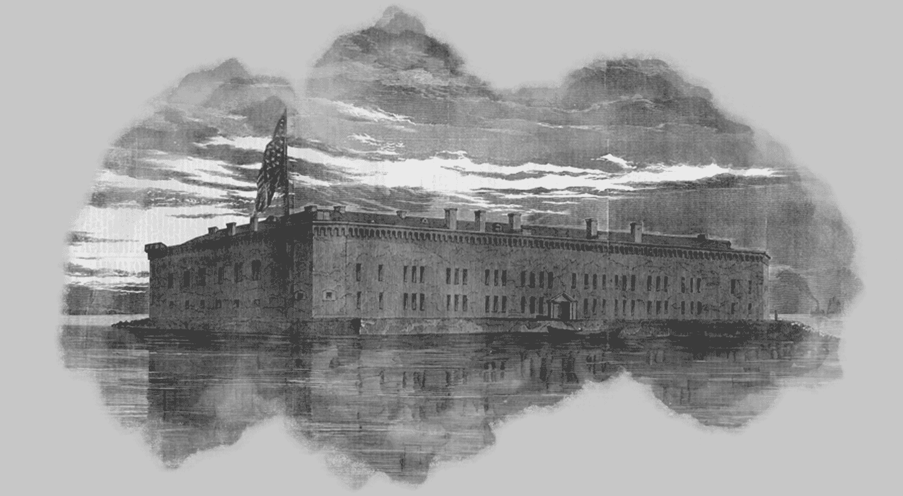
6. květen - Kongres Konfederovaných států amerických potvrzuje válečný stav se Spojenými státy americkými a o deset dnů později vyhlašuje nábor 400 000 dobrovolníků do armády. Odtrhává se Arkansas, Tennessee a Severní Karolína. K odtržení Marylandu nedošlo jenom díky včasné vojenské intervenci Severu. Přestože Virginie se oficiálně připojila ke Konfederaci, není ideologicky jednotná. Zejména na severozápadě převažuje profederálně smýšlející obyvatelstvo a jednotky Unie pronikající do západní Virginie jsou prakticky vítány jako osvoboditelé. Hlavní frontu na východě teď tvoří tok řeky Potomac a síly na obou stranách vyčkávají. Živo ale začíná být v Missouri a povodí Mississippi.
Vláda ve Washingtonu je pod silným tlakem. Veřejnost se dožaduje rozhodné akce proti vzbouřeným státům. Přední osobnosti veřejného života naléhají na Lincolna a jeho kabinet aby byly podniknuty kroky k rychlé ofenzivě a dobytí Richmondu. Generál Irvin McDowell, který je pověřen operací "Vpřed na Richmond" má však nelehký úkol. Konfederační generál Beauregard operuje se svojí armádou ve výhodné pozici poblíž železniční křižovatky u Manassasu a může případně ohrozit Washington. Další silné uskupení jižanů, armáda J. E. Johnstona, stojí v údolí Shenandoah.
16. červenec - McDowelova armáda se začíná přesouvat z obrany Washingtonu směrem k pozicím konfederovaných u Manassasu.
18. červenec - ohnston reaguje na pohyb nepřítele a podstatnou část svého vojska vede na pomoc generálu Beauregardovi. Po dvou dnech pochodu se jeho asi 9 000 mužům podaří spojit s 22 000 vojáky Beauregardovy armády a dalších zhruba 8 500 jižanů je na cestě.
21. červenec - U říčky Bull Run se schyluje k bitvě. McDowelovi z původních 40 000 vojáků zbylo okolo 28 000 poté, co části z nich vypršela tříměsíční služba. V 6:30 začíná bitvu federální dělostřelectvo. Zpočátku jsou bojově úspěšnější unionisté ale odpoledne se karta obrací. Díky rozhodnému útoku linie, jejíž jádro tvoří Jacksonova brigáda a která je podpořena kavalerií J. E. B. Stuarta se postupně jednotky Unie obracejí na útěk. Do nastalé paniky se zamíchá i množství civilistů, kteří se přijeli podívat na tu "zábavu" zblízka. Kvůli špatnému zhodnocení situace si Beauregard nechá ujít velkou šanci. Kdyby se rozhodl pro pronásledování, mohl změnit "Vpřed na Richmond" na "Výlet do Washingtonu".
V Missouri se dramaticky vyhrocuje situace a boje mezi stoupenci a odpůrci Unie jsou stále tvrdší. Schyluje se i k velkému střetu pravidelných armád.
9. - 10. srpen - Gen. Nathaniel Lyon (US) stojí v Dug Spring s asi 5 200 muži proti velké přesile McCullochovy armády, která se navíc spojila s Pricem, Rainsem a Jacksonem. Přesto se rozhodne bojovat a stahuje své síly k Wilson's Creek. V druhé největší bitvě prvního roku války však rozhoduje přesila tři na jednoho a unionisté jsou zahnáni na útěk. Navíc je zabit sám generál Lyon.
19. srpen - Kongres C.S.A. vyhlašuje alianci se státem Missouri. Toto formální gesto ale nedokáže vyřešit hlubokou rozpolcenost a chaos v tomto státě. V St. Louis je vyhlášeno stanné právo. Loďstvo Unie koncem srpna oťukává obranu obranu pobřeží Konfederace. Ta je velmi slabá a zranitelná. Na důležitých úsecích sice stojí pevnosti ale chybí důsledná podpora loďstva. Po obojživelném útoku je prolomena jižanská obrana v zátoce Hatteras. Boje pokračují v Missouri a Kentucky. Také v Západní Virginii je živo. Leemu, který velí této oblasti a má pod sebou asi 30 000 mužů, se ale příliš nedaří. U Cheat Mountains poráží Rosencrans (US) Jacksona.
20. září - Gen. Sterling Price (CS) po několikadenním obléhání dobývá Lexington v Missouri.
Veřejnosti na Severu už od porážky u Bull Runu otrnulo a požaduje rozhodnou ofenzívu proti rebelii. Lincoln pověřuje tímto úkolem generála McClellana. Tento úspěšný a ostřílený velitel z Mexické války je sice skvělým organizátorem ale průměrným taktikem. Také nerad přejímá cizí názory a spoléhá se hlavně na ty své. Díky chybné práci zpravodajců a hlavně svému špatnému odhadu značně přeceňuje sílu nepřítele. Je přesvědčen že rebelové mají u Manassasu nejméně 150 000 vojáků ale ve skutečnosti jich tam není více jak 50 000. Nový velitel Potomacké armády požaduje 35 000 mužů na obranu Washingtonu a dalších 23 000 na obranu Potomacu a obsazení Annapolisu a Baltimoru. K útoku na Richmond pak chce dalších nejméně 150 000 vojáků. Než budou stavy naplněny a dokončen výcvik, bude muset ofenzíva na Jih počkat. Tedy nejméně do jara. Stejně jako v Unii i prezident Davis v Konfederaci čelí žádostem o rozhodnou akci. Především o vyčištění západní Virginie od yankeeů.
12. říjen - Jižanský pokus o rozbití blokády New Orleans za účasti korzárského obrněnce Manassas a dalších bitevních lodí se nezdařil.
16. říjen - Lexington v Missouri opět mění dobyvatele. Jednotky Unie ho obsazují bez boje po evakuaci Priceových jižanů.
18. říjen - Dělové čluny Unie zahajují plavbu po Mississippi a tím i operaci na ovládnutí tohoto důležitého toku.
21. říjen - Generál CH. Stone (US) napadne Leesburg ve Virginii v přesvědčení o jeho slabé obraně. Ve městě jsou ale čtyři pluky Evansovy brigády. Unionisté jsou překvapeni silným odporem a ustupují k Ball's Bluff. V nastalé bitvě to odnese hlavně Bakerův pluk. Ten utrpí velké ztráty na životech, včetně samotného plukovníka Bakera a zanechává v rukách jižanů nekolik set zajatců.
1. listopad - McClellan nahradil Winfielda Scotta ve funkci vrchního velitele armády Spojených států.
7. listopad - Federální námořní eskadra komodora Du Ponta útočí na pevnosti v ústí kanálu Port Royal mezi Savannah a Charlestonem. Na výsadek je připraveno 12 000 mužů Thomase W. Shermana. Do večera jsou pevnosti a tím celý tento strategický bod na pobřeží v rukou Unie. Na Mississippi se generál Grant se svými jednotkami vyloďuje u Belmontu. Musí ale čelit houževnaté obraně a palbě těžkého dělostřelectva z opevnění Columbusu a raději po řece ustupuje.
18. listopad - V Kentucky vzniká prokonfederační vláda. Stát má tedy vlády dvě, každou na jiné válčící straně.
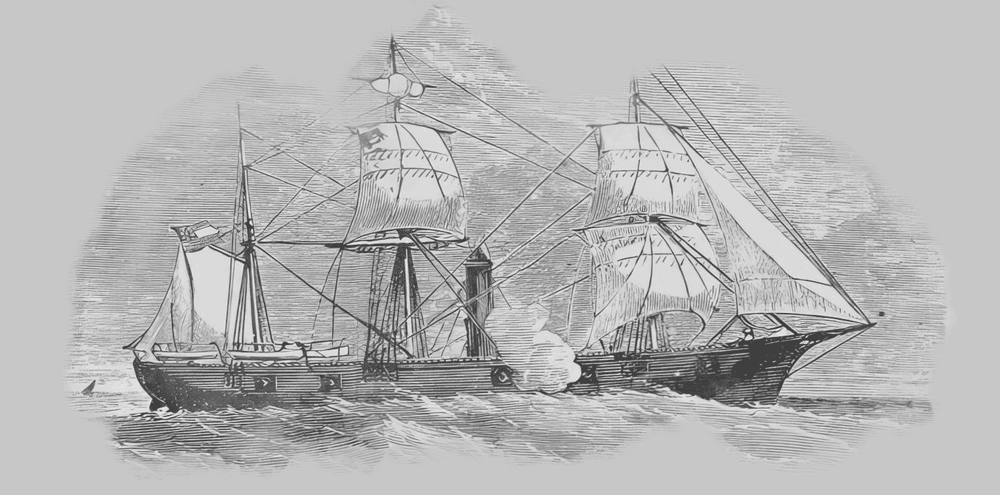
Leden - Začátek roku je ve znamení zdánlivého klidu na obou stranách. V ústí Mississippi se usadily federální jednotky pod velením generála Phelbse a vypadá to že chtějí provést invazi do vnitrozemí. Jackson (CS) opouští se svojí desetitisícovou armádou zimoviště ve Winchesteru s úmyslem narušit důležité železniční trasy a tím i zásobování federálů materiálem a vojáky. McClellan stále ještě není připraven na Richmondskou ofenzivu ale rozhodně nezahálí (přestože mnoho senátorů si to myslí) a na horním Mississippi začíná Grant (US) připravovat postup na Columbus. Asi 15 000 vojáků Ambrose E. Burnsidea je vysláno po moři jako posila jednotkám Unie u Port Royalu k invazi do Severní Karolíny.
17. leden - Generál Crittenden (CS), který přijel převzít velení nad 6 000 muži u Mill Spring se ještě na novém postu příliš neohřál a už to vypadá že bude čelit nepřátelskému útoku. Na jeho pozice míří Thomasova kolona a blíží se i několik pluků generála Alvina Shoepfa. Crittenden má v plánu překvapit postupujícího Thomase.
19. leden - Brzo ráno osm pluků Crittendenovy pěchoty opouští zákopy v Beech Grove aby překazilo spojení obou federálních uskupení. Předsunuté oddíly Konfederace brzy narazí na nepřítele a zahajují útok. Ten je zprvu úspěšný ale v rozhodující chvíli se Shoepfovi podaří spojit se s Thomasem a jižané jsou zahnáni na úprk zpět až k výchozím pozicím u Beech Grove. Během noci ustupují rebelové až do Mill Spring a unikají tak dalšímu krveprolití.
4. - 5. únor - Dvě divize pod velením Ulyssese Granta (US) se vyloďují severně od Fort Henry na řece Tennessee. Následující den měl generál v úmyslu zaútočit na pevnost s podporou dělových člunů Andrewa Footeho.
6. únor - Kombinace přesné a účinné námořní palby, hustého deště a špatného umístění pevnosti (stoupající voda ji téměř zaplavila) způsobila, že její velitel Lloyd Tilghman se vzdává Footemu ještě před příchodem Grantovy pěchoty.
11. - 13. únor - Grant přesouvá svou armádu k asi 20 km vzdálené pevnosti Fort Donelson na řece Cumberland. Cílem je úplné obklíčení.
14. únor - Foote se svým loďstvem zahajuje útok na pevnost ale musí se stáhnout před zničující střelbou pevnostních děl. Grantovy oddíly mezitím podnikají několik průzkumných útoků.
15. únor - Gideon Pillow (CS), zástupce velitele pevnosti Johna Floyda, zahajuje překvapivý výpad proti pravému křídlu Grantovy armády. Záměrem je otevřít únikovou cestu pro ústup do Nashvillu. Pillowův útok je úspěšný ale Floyd ztrácí nervy a nařizuje svým mužům, aby se vrátili do pevnosti. Následujícího rána Floyd a Pillow unikají s malým oddílem vojáků.
16. únor - Všechny tři Grantovy divize dokončily obklíčení ale k útoku již nedošlo. Buckner, který převzal velení pevnosti, se rozhodl vyvěsit bílou vlajku. Grant odmítá podmínky kapitulace a zajímá zbylých asi 14 000 mužů v pevnosi. Vysloužil si tím přezdívku Unconditional Surrender (Bezpodmínečná Kapitulace) což pěkně koresponduje s jeho iniciálami (Ullysses Simpson) a velkou popularitu u veřejnosti na severu.
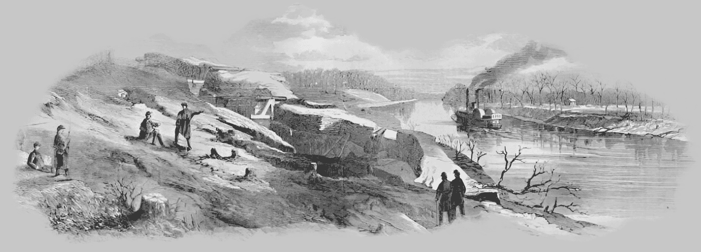
21. únor - Bojuje se i daleko na západě. V Novém Mexiku se u Fort Craigu střetává 2 600 vojáků H. Sibleye s 3 800 seveřany a vítězí. Rebelové ukořistili šest děl a postupují na Santa Fe.
1. březen - Konfederační síly jsou nuceny pomalu ustupovat z Missouri do Arkansasu. Unionisté jsou v oblasti okolo Mississippi v přesile a zanedlouho jich bude ještě víc. Má sem namířeno i čerstvě povýšený generálmajor Grant. Do jeho stoupající kariéry však zasahuje aféra s jeho údajným nadměrným požíváním alkoholu, kterou rozvíří generál Halleck.
4. březen - Generál Earl Van Dorn (CS) shromažďuje v Boston Mountain veškeré dostupné konfederační síly na mississipské frontě, včetně armády Sterlinga Pricea a Bena McCullocha. Je zde i indiánská divize složená z příslušníků kmenů Čerokí.
7. březen - Van Dorn útočí na pozice Unie u Pea Ridge. Po celodenních bojích je bitva nerozhodná. Umírá generál McCulloch.
8. březen - Yankeeové u Pea Ridge podniknou protiútok za silné podpory dělostřelectva a obracejí jižany na útěk. Je jasné že vyhnat unionisty z Missouri se už jen tak nepodaří.
8. březen - Nové obrněné plavidlo Konfederace Virginia vyplouvá na moře, vypořádat se s první překážkou. Blokující flotilou Unie před Portsmouthem na Hampton Roads. Potápí lodě Congress a Cumberlad a poškozuje fregatu Minessota. Přestože se několikrát ocitá pod přímou palbou, nejeví známky většího poškození a vrací se do doků k drobným opravám. Ještě večer téhož dne doráží po nesnadné plavbě na místo nová posila loďstva Unie - obrněnec Monitor.
9. březen - Virginia se vrací aby dodělala Minessotu, uvězněnou na mělčině ale naráží na rovnocennějšího nepřítele. Souboj trvá velmi dlouho a ukazují se slabiny obou soupeřů. Parní stroj Virginie je příliš slabý na rychlé manévrování s tunami železa a na Monitoru zase mají problémy se zaměřováním palby a ventilací palebné věže. Nakonec se obě plavidla, poškozená bojem stahují. Na velké plány jižanů na zničení veškerých lodí blokády a vybombardování New Yorku se snesla noční můra jménem Monitor...
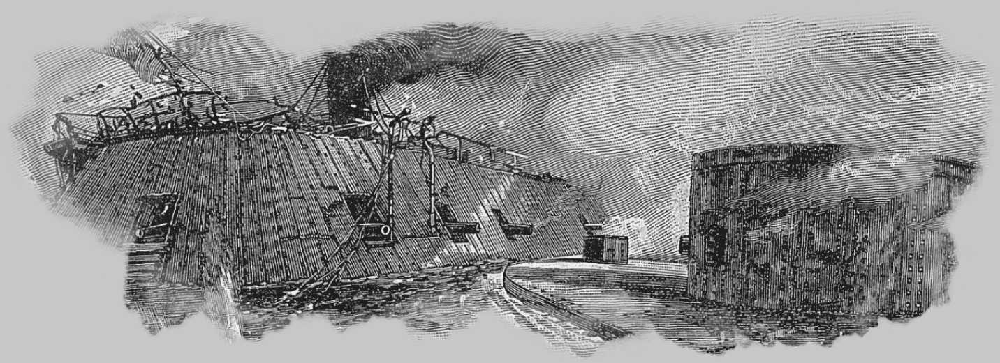
20. březen - Jackson pronásleduje síly Unie směrem na Winchester ve Virginii.
22. březen - Jižané generála Jacksona narážejí na pronásledované federalisty, kteří se zakopali nedaleko Winchesteru u osady Kernstown. Dochází k ostrému střetu, při němž jsou rebelové nuceni se stáhnout.
23. březen - Rozhodný útok seveřanů u Winchesteru uštědřil jižanům velké ztráty a přinutil je definitivně ustoupit. Přesto přítomnost Jacksona v této oblasti způsobila obavy z ohrožení Washingtonu a bylo vyčleněno několik jednotek z McClellanových sil na obranu hlavního města.
1. duben - Podle McClellanova plánu má být operace hlavních sil Potomacké armády vedena směrem od moře. Dvanáct divizí je připraveno na invazi v pevnosti Fort Monroe. Celkem 112 000 vojáků!
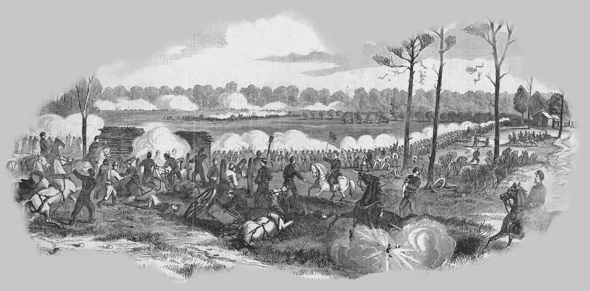
6. duben - Několik týdnů shromažďované síly jižanů v mississippském Corinthu udeřily brzo ráno na federální tábor u Shilohu v Tennesee. 40 000 rebelů pod velením A. S. Johnstona převálcovalo první narychlo postavenou linii překvapených unionistů a zatlačilo Shermanovu a Prentissovu divizi na ústup. Při akci na pravém křídle byl smrtelně raněn sám Johnston, když osobně vedl útok proti divizi generála Hulburta. Prentiss byl obklíčen a jeho 2 200 mužů upadlo do zajetí. Do setmění utrpěly obě strany těžké ztráty a federální jednotky byly jenom krok od úplné porážky. Večer ale Unii přišly posily v počtu tří divizí. Poslal je generál Grant, který velí už celé mississippské oblasti.
7. duben - Za svítání vede Unie 54 000 vojáků do protiútoku proti 34 000 bojeschopným konfederantům a karta se obrací. Beauregard, který po smrti Johnstona převzal velení jižanských brigád, musí ustoupit zpět do Corinthu. Krvavá bitva u Shilohu sice nemá vítěze ale Unie je na tom lépe protože stále ovládá povodí Mississippi. Ztráty na obou stranách jsou nejstrašnější od začátku války. Asi 3 500 mrtvých a 16 500 raněných.
10. duben - Pevnost Fort Pulaski v přístavu Savannah se vzdává po 18ti hodinovém ostřelování federálním dělostřelectvem.
14. duben - Seveřanům se stále nedaří úplně ovládnout Missouri. Jejich jednotky musejí na několika místech čelit tvrdému odporu projižanské domobrany.
19. duben - U New Orleansu útočí federální flotily na konfederační pevnosti Fort Jackson a Fort St. Philip ale zdá se, že množství vystřelených dělostřeleckých granátů nemá příliš velký účinek. Na palubách přepravních lodí je 15 000 unionistů Benjamina Butlera.
24. duben - Farragutova seveřanská flotila vplouvá do ústí Mississippi a míří na New Orleans. Do cesty se jim postaví slabší říční plavidla Konfederace ale většina jich je zneškodněna, včetně klounového obrněnce Manassas. Lodě Unie se probijí mezi opevněními a míří na New Orleans.
25. duben - Konfederanti evakuují New Orleans a město bez boje padá do rukou Unie.
2. květen - McClellanova obrovská armáda stojí před Yorktownem a chystá se k útoku. J. E. Johnston, který velí jednotkám ve městě se připravuje k evakuaci. Na druhý den obránci opouštějí město a stahují se směrem na Richmond.
4. květen - McClellan okupuje Yorktown a posílá divizi gen. Stonemana aby pronásledoval Johnstona. Stoneman ale naráží na prudký odpor zadních vojů Johnstonových jednotek a pevnosti Fort Magruder nedaleko Williamsburgu. Zastavuje se a čeká na posily. V noci se k němu přidává Hooker a přebírá velení.
5. květen - K silám Konfederace u Williamsburgu se připojují jednotky gen. Longstreeta. Hooker podnikne ofenzívu, přestože má jen 9 000 mužů a spoléhá se na příchod dalších federálních divizí. Ty nakonec opravdu dorazí a zatlačí jižany opět na ústup. Hookerovo vojsko platí za svou horlivost těžkými ztrátami.
6. květen - Unie má v údolí Shenandoah tři rozdělené armády. Někde mezi nimi se nachází Jacksonovo vojsko, kterému ještě přišla na pomoc divize generála Ewella. Jestli Jackson nechce čelit velké přesile, nesmí dovolit seveřanským jednotkám aby se spojily.
8. květen - U McDowellu napadne Jackson postupující kolonu R. H. Milroye a zažene ji na ústup.
9. květen - Kolos potomacké armády se nezadržitelně valí Virginií. Unionisté obsazují Norfolk. Jižané na útěku z loděnic ničí co se dá včetně své pýchy, obrněnce Virginia. Pro plavbu do Richmondu má bohužel příliš velký ponor.
15. květen - Unie útočí na pevnost Fort Darling u Drewry's Bluffu. Mezi obránci je i dělostřelecká posádka z paluby Virginie.
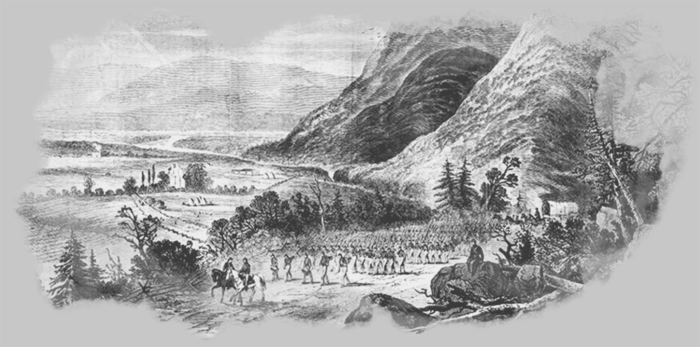
23. květen - Jackson se svými 16 000 vojáky doslova smete vojsko plukovníka Kenleye u Front Royalu. Jacksonova aktivita v údolí odčerpá dalších 20 000 mužů z McDowellovy armády, která postupuje od severu jako součást ofenzívy proti Richmondu.
25. květen - Jackson si vybírá další cíl. Tentokrát je to 6 500 mužů Banksovy armády. Po několika hodinách boje se unionisté obracejí na útěk. Rebelové je pronásledují až k Potomacu a cestou jim způsobují velké ztráty, včetně skoro 1 000 zajatých vojáků.
27. květen - U Hannover Court House se pravému křídlu potomacké armády postaví konfederační jednotky ale jsou rozprášeny přesilou.
30. květen - V Harpers Ferry se shromažďují velké síly Unie aby zastavily řádění Jacksonovy shenandoahské armády. Jižanský generál je nucen ustoupit přesile zpět k Front Royal. V Mississippi evakuuje generál Beauregard Corinth a město je vzápětí okupováno federálními jednotkami gen. Hallecka.
31. květen - U Fair Oaks konečně J. E. Johnston, pověřený obranou Richmondu, začal s ofenzívou Konfederace proti postupující potomacké armádě. Jeho síly útočí na 30 000 mužů McClellanova levého křídla, kteří jsou zakopáni v linii sahající až k Seven Pines. Postup útočících divizí jižanů se nedaří sjednotit, přesto nepřítele vytlačí ze zákopů a donutí k ústupu k Fair Oaks. V podvečer přicházejí seveřanům posily, které McClellan vyčlenil ze Sumnerova sboru. Generál Johnston je těžce zraněn dělostřeleckým granátem.
1. červen - Velení obrany hlavního města Konfederace přebírá Robert E. Lee a hned obnovuje útok na pozice unionistů u Fair Oaks. Dochází ke krvavému střetu. Když seveřanům dorazí na pomoc Hookerova divize, začíná se projevovat jejich převaha a konfederační linie je prolomena. Leeova armáda je nucena spěšně ustoupit.
6. červen - Po slabém odporu flotila Unie na Mississippi dobývá Memphis.
8. červen - V údolí Shenandoah proti Jacksonovi postupuje vojsko generála Shieldse a na záda se mu tlačí Frémont. Konfederačí generál ví že mu hrozí obklíčení a tak zanechává Ewella s polovinou armády u Cross Keys a sám se zbytkem mužů pokračuje k Port Republic. Zde naráží na první Shieldsovy unionisty. Ewell mezitím podstupuje bitvu s Frémontovými asi 18 000 vojáky a v noci přesunuje své muže aby je spojil s Jacksonovými.
9. červen - Jacksonova armáda je opět celá. Překračuje řeku a ničí za sebou most. Po několikanásobném frontálním útoku na Shieldsovu armádu se podaří prolomit její linie a yankeeové se obracejí na ústup. Mezitím se na druhém břehu Shenandoah přiblíží Frémontovy jednotky ale nezbyde jim jen nečinně přihlížet zkáze, protože nemohou překročit řeku.
12. červen - Poté co se svojí malou armádou zastavil McDowella, Frémonta a Bankse, tedy celkem zhruba 60 000 mužů, v jejich postupu do srdce Virginie, vydává se Jackson na pomoc Leeovi k Richmondu.
14. červen - Kavalerie J. E. B. Stuarta se dostává do týla Potomacké armády a likviduje několik skladišť zásob a jeden vlak s federálním materiálem.
15. červen - Relativní snadnost, s jakou se Stuart dostal k zásobovacím trasám Unie naznačuje Leeovi že nejsou dostatečně chráněné a tudíž zranitelné.
16. červen - U Charlestonu v Jižní Karolíně probíhá neúspěšný pokus federalistů o prolomení silné obrany města.
25. červen - Potomacká armáda měla dost času se připravit na generální útok na Richmond ale McClellan má jako vždy pochybnosti o síle své armády. Je přesvědčen že má proti sobě nejméně 200 000 rebelů a telegrafuje do Washingtonu že nutně potřebuje další posily. Ve skutečnosti mají jižané u Richmondu pouze něco přes 80 000 vojáků.
26. červen - Je čas na rozhodnou akci proti seveřanům na obléhací linii u Richmondu. Lee klame manévrem na hlavní část sil Potomacké armády ale hlavní úder vede na osamocený sbor F. J. Portera na severní straně řeky Chickahominy u Mechanisville. Útok je zprvu úspěšný ale vinou špatné koordinace jižanských jednotek se nepodaří nepřítele přemoci. Přesto navečer vydává McClellan rozkaz k ústupu všech sborů z obavy před odříznutím od zásobovacích tras. Na Mississippi začíná obléhání a ostřelování Vicksburgu, posledního důležitého opěrného bodu Konfederace na řece.
27. červen - Na ustupující federální armádu obnovují u Gaines Mill útok divize A. P. Hilla, Longstreeta, Ewella, Jacksona a D. H. Hilla. Všechny sbory potomacké armády nyní chvatně ustupují a jižanům se podaří ukořistit velké množství zásob, které po sobě zanechávají.
29. červen - Lee nedopřeje ustupujícímu McClellanovi chvíli oddychu a neustále útočí na zadní voj Potomacké armády.
30. červen - McClellan ustupuje k řece James a jižané mají asi poslední příležitost k pokusu o jeho obklíčení. Lee má v plánu udeřit celou Severovirginskou armádou (zhruba 80 000 mužů). Jackson se má dostat nepříteli do týla a zbytek povede křídelní útok. Nelze ale zaútočit koordinovaně, protože Jacksona zdrží zničené mosty a plán ztroskotává.
1. červenec - Potomacká armáda se opevňuje na Malvern Hill nad řekou James. Lee nutně potřebuje vybojovat vítěznou bitvu aby odvrátil pozornost Unie od Richmondu. Nařizuje tedy útok na zakopaného nepřítele. Útočící divize jsou ale smeteny silnou seveřanskou artilérií. Přestože má nyní McClellan jistou strategickou převahu, rozhodne se definitivně stáhnout do Harrisonova přístavu. Leemu se sice nepodařilo úplně porazit Potomackou armádu ale hlavní město Konfederace již není bezprostředně ohroženo.
2. červenec - Prezident Lincoln požaduje dalších 300 000 mužů do armády na tříletou službu.
7. červenec - Potomacká armáda leží opevněna v Harrisonově přístavu a McClellan ve své zprávě prezidentu Lincolnovi popisuje svou situaci jako bezvýchodnou. V očekávání nevyhnutelného útoku rebelů samozřejmě nezapomene na žádost o posily. Kdyby jeho zvědi byli o něco bystřejší, věděl by, že Lee už se dva dny stahuje zpět k Richmondu.
13. červenec - Nájezdnické jednotky konfederační kavalerie J. H. Morgana a N. B. Forresta operují v Kentucky a na území Tennessee. Obě malá vojska likvidují odloučené federální jednotky a sklady, berou zajatce a vůbec se snaží způsobit co největší škody v týlu nepřítele.
20. červenec - V Missouri federální armáda J. M. Shoefielda podniká trestnou výpravu proti polovojenským projižanským jednotkám.
21. červenec - Richmondu začíná hrozit nové nebezpečí od severu v podobě armády generála Popea. Jeho armáda se skládá ze Sigelova a Banksova sboru ze Shenadoah spolu se sborem generála McDowella.
3. srpen - McClellan dostává rozkaz od svého nového vrchního velitele Hallecka aby se svou armádou opět zaujal obranná postavení u Washingtonu.
5. srpen - J. C. Breckinridge (CS) podniká se svojí divizí útok na Baton Rouge v Louisianě. Dosáhne určitého úspěchu ale nedokáže město pod federální dělostřelbou udržet a ustupuje.
9. srpen - Unionistická divize N. Bankse útočí na jednotky Stonewalla Jacksona u Cedar Mountain. Špatně ale odhaduje sílu nepřítele, kterému právě včas přišla na pomoc divize A. P. Hilla a těžce na to doplatí vysokými ztrátami.
10.-16. srpen - Šarvátky v Missoury začínají nabývat rozměrů regulerních bojů.
20. srpen - Situace je následující: Lee se v minulých dnech hnul vstříc divizím Unie generála Popea. Nyní stojí na západním břehu řeky Rappahannock s asi 80 000 vojáky. Pope, zahnaný aktivitou severovirginské armády na východní břeh, čeká na posily od přesunujících se sil McClellanovy "Army of Potomac". Je jasné, že se schyluje k další velké bitvě.
22. srpen - Pluk kavalerie Jeba Stuarta podniká výpad přímo do tábora seveřanů a vrací se s několika zajatými federálními důstojníky a informacemi o stavu a rozložení armád Unie.
25. srpen - Lee posílá Jacksona s veškerou jízdou a 66 pluky pěchoty na obchvat nepřítele a obsazení Manassasu.
26. srpen - Divize gen. Longstreeta (CS) operuje směrem k nepříteli s úmyslem spojit se křídelně s Jacksonem. Pope (US) neváhá a rychle ustupuje na sever k Manassaské křižovatce.
27. srpen - Lee pochoduje se zbytkem armády Severní Virginie přes Thorofareský průsmyk aby podpořil Jacksona s Longstreetem.
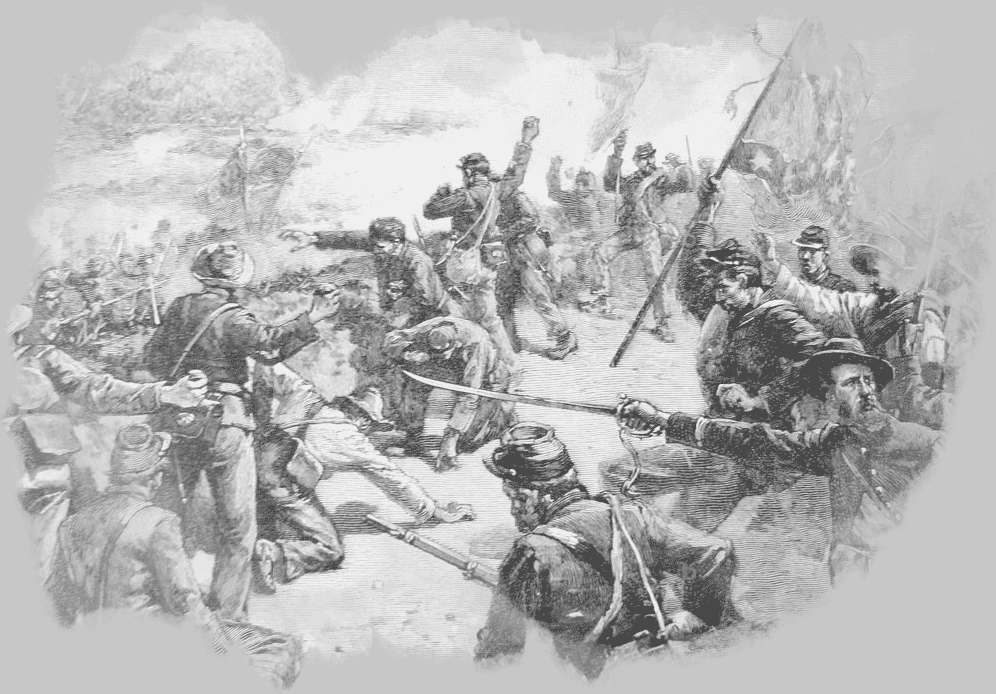
28. srpen - Rychlý postup Popeových unionistů Jacksona poměrně zaskočí. Jižanský generál předstírá ústup do údolí Shenandoah ale odpoledne zaútočí na Popeovo odkryté křídlo. Bojuje se až do tmy ale bez zjevné převahy na té či oné straně.
29. srpen - Pope vrhá celou svou armádu proti postavení Stonewalla Jacksona když vzápětí doráží na bojiště divize generála Longstreeta a dostává tak unionisty do kleští. Do večera ale ještě není rozhodnuto.
30. srpen - Generál Unie ráno obnovuje pokusy o proražení Jacksonovy konfederační liniie. Do boje vstupuje Longstreet, když začne dorážet na Popeovo levé křídlo. Tím ulehčí Jacksonovu sboru, který může podniknout prudký protiútok. Opakuje se situace z minulého roku. Stejné bojiště a stejná armáda prchající k Washingtonu.
1. září - Dohrou druhého střetnutí u Bull Runu je bitva u Chantilly. Pro nepřízeň počasí nelze pronásledovat ustupující jednotky Unie, přesto Lee vysílá Jacksona k Fairfaxu. Pope, který si chce napravit reputaci, mu posílá naproti McDowella se třemi sbory. Obě armády na sebe narazí před setměním na Ox Hillu nedaleko Chantilly. V silném dešti dochází ke krvavé, zmatené řeži, ze které vítězně vycházejí jižané.
9. září - Pope je odvolán a na scénu se s velkým zadostiučiněním vrací McClellan. Tentokrát je pověřen urychleně postavit na nohy demoralizovanou armádu Severu. Mezitím vstupuje "Army of Northern Virginia" do Marylandu a Lee vydává prohlášení k obyvatelstvu aby se přidalo na stranu Konfederace. Zatím nemá v plánu ohrozit Washington a spíše hledí na to aby se jeho veteráni po dlouhých měsících v poli zase jednou pořádně najedli a vystrojili. Válkou zatím nedotčené území nepřítele je k tomu jako stvořené. V hlavním městě Unie zatím vládne strach z útoku rebelů a vláda se připravuje k evakuaci.
13. září - McClellanovi se během několika dnů podařilo postavit armádu o sedmi sborech a 90 000 mužích a vyráží proti Leeovi. Ten mezitím rozkazem rozdělil své vojsko a má v úmyslu ho opět spojit u Hargestownu. Jackson finguje postup do Pensylvánie ale ve skutečnosti chystá past na federální posádku v Harpers Ferry. Leeovy úmysly jsou unionisty odhaleny poté, co náhoda přinese McClellanovi do rukou kopii jeho rozkazu.
14. září - Brzy ráno jsou napadeny zadní oddíly jižanů u South Mountain a Lee se musí postavit seveřanskému sboru generála Burnsidea.
15. září - Jacksonův sbor dobývá Harpers Ferry a bere do zajetí skoro 12 000 obránců města. Vzápětí se vydává na pomoc osamocenému Leeovi k Sharpsburgu, kde se již srocují první jednotky McClellanovy armády.
17. září - Unie za úsvitu nepříliš účinně útočí u Antietamského potoka na levé křídlo Konfederace. Po pádném protiútoku Jacksonovy divize se bitva posouvá o něco jižněji. McClellan má spoustu čerstvých vojáků ale nedokáže toho plně využít. Jižané bránící cestu, později známou jako Bloody Lane (Krvavá ulička), utrpí obrovské ztráty ale unionistům se nedaří prorazit konfederační linie a donutit nepřítele ustoupit. Navíc se po dlouhém pochodu dostavuje divize A. P. Hilla a posiluje jižanské pozice.
18. září - Lee ví, že nemá cenu pokoušet se o útok proti přesile a ustupuje v klidu za Potomac bez jakékoliv známky pronásledování ze strany Unie.
19. září - 14 000 vojáků gen. Pricea (CS) okupuje Iuku, malou ale důležitou stanici na Memphisko- Charlestonské železnici. V nedalekém Corinthu má Grant většinu sil Unie v této oblasti. Vysílá Rosencransovu Mississippskou armádu aby dobyla Iuku zpět. Pozdě odpoledne zaútočí první jednotky Unie na postavení rebelů a tlak se s přicházejícími posilami stupňuje. Price během noci ustupuje.
1. říjen - Lincoln je na návštěvě u Potomacké armády aby s McClellanem prodiskutoval situaci. Mezitím, co se roztroušených 53 000 unavených Leeových vojáků znovu shromažďuje u Winchesteru, má McClellan 100 000 odpočatých a dobře zásobených mužů v nedalekém Harpers Ferry a dalších 75 000 u Washingtonu. Přesto požaduje od prezidenta další posily aby se mohl vypořádat s Leem.
4. říjen - Vojska generálů Pricea a VanDorna podnikají mohutný útok na Corinth. Kolony postupují proti silnému opevnění a probíhá ostrý boj muže proti muži. Přes veškerou snahu se ale nakonec za velkých ztrát musejí jižané stáhnout.
8. říjen - U Perryville v Kentucky se odehrává krvavá bitva mezi mississipskými sbory generála Braxtona Bragga (CS) a částí Buellovy unionistické armády.
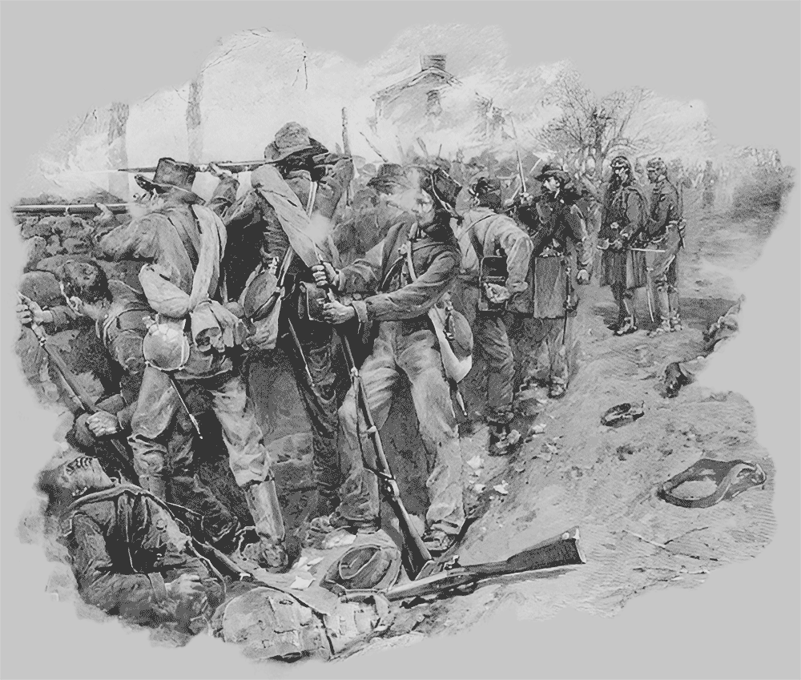
26. říjen - Po několika týdnech nečinnosti a mnoha žádostech Lincolna o ofenzivu se Potomacká armáda pomalu začíná přesouvat přes Potomac do Virginie. McClellan má nyní více než 130 000 mužů proti Leeovým 70 000 v údolí Shenandoah.
7. listopad - McClellan je konečně spokojen se stavem a postavením své armády a plánuje operaci na úplné rozbití jižanských sil na východě. Je však už pozdě. Do tábora Potomacké armády doráží posel s rozhodnutím prezidenta Spojených států o jeho odvolání a nahrazení generálem Burnsidem.
23. listopad - Burnside provádí reorganizaci své nové armády a mění McClellanovy plány. Místo zničení Leea se chce zmocnit Fredericksburgu a poté konečně vytáhnout na Richmond. Nyní tedy po asi týdenním přesunu stojí před Fredericksburgem a čeká na pontony pro překročení řeky Rappahannock (mosty jsou totiž zničené), zatímco Lee už ho předešel a opevňuje se nad městem na druhé straně řeky.
13. prosinec - Poté co překročil řeku a vstoupil do města, rozhodl se Burnside vést útok proti zakopaným jižanům na vršcích kolem města. Na jihu se střetne Franklinova divize s Jacksonem a podaří se jí udělat do linie rebelů několik děr ale ty jsou vzápětí zaceleny Earlyho divizí. Na severu jsou ale jižané v silných pozicích a postupující kolony Sumnerova sboru jsou postupně smeteny palbou dělostřelectva a pěchoty. Divize za divizí pochoduje vstříc neskutečným jatkám...
14. prosinec - Armáda Unie opouští Fredericksburg a ustupuje za Rappahannock.
20. prosinec - Grant v Mississippi podniká první kroky k obsazení Vicksburgu - posledního opěrného bodu jižanů na řece. Na jeho zásobovací kolony ale neustále doráží VanDornova kavalerie a působí nemalé škody.
29. prosinec - Shermanova divize z Grantovy armády je na postupu na Vicksburg zastavena silnými pozicemi jižanů u řeky Chickashaw Bayou. Generál Unie se rozhodne pro útok ale je tvrdě odražen.
31. prosinec - Podobně jako jeho soupeř Virginia, končí i Monitor na mořském dně.
2. leden - U Mufreesbora na Stoneově řece probíhá bitva mezi Braggem a Rosencransem. Začala už před dvěma dny, když brzo ráno zaútočily konfederační jednotky na levé křídlo nepřítele a podařilo se jim ho zatlačit. Na Nový rok oba protivníci přeskupují linie a hledají výhodnější pozici. Dnešek bojů u Mufreesbora opět zahajuje Bragg mohutnou dělostřeleckou přípravou do níž ale vstupuje protiútok modrokabátníků VanClevea. Ten je sice odražen ale zároveň musí jižané ustoupit na druhém křídle a strhávají sebou zbytek vojska.
3. leden - Bragg není poražen a má jistou taktickou převahu ale rozhodne se ustoupit do jistějších pozic na Duck's River.
11. leden - Asi 5 000 obránců konfederační pevnůstky Fort Hindman na řece Arkansas se vzdává po útoku 32 000 federalistů generála McClernanda.
25. leden - Potomacká armáda opět mění vrchního velitele. Je jím jmenován Joseph E. Hooker. Burnside je odvolán a bere si dlouhou dovolenou :-) Hooker přebírá armádu v hrozném stavu. Pokleslá morálka, způsobená posledními porážkami je příčinou hromadných dezercí (přes 200 lidí denně). V zimním táboře federalistů se rozmáhají nemoce a obyčejným vojákům nedodala sebevědomí ani zpráva o Lincolnovu zrovnoprávnění černochů. Pro většinu z nich je pohlížení na "negry" jako na sobě rovné něco zcela nepochopitelného. Mimo jiné se Hooker musí vypořádat se svou výzvědnou službou. Pochybné informace zvědů Alana Pinkertona (ano, toho Pinkertona který později založil známou detektivní kancelář) byly prokazatelně jednou z příčin neúspěchů Unie v posledních měsících.
Únor - Grant zjišťuje, že dobytí Vicksburgu bude velice tvrdým oříškem. Vysílá několik průzkumných výprav po přítocích Mississippi aby zjistil zda existuje možnost dostat se obráncům města do týla. Probíhá několik malých lodních operací přímo na Mississippi pod silně opevněnými bateriemi a menší federální oddíly se plaví po řekách Yazoo, Coldwater a Tallahatchie. Potomacká armáda se po Hookerových reformách pomalu probouzí z letargie ale sužují ji neustálé nájezdy konfederační kavalerie. Jižanští jezdci dělají svou práci opravdu skvěle a yankeeové jim v tom prakticky nedokážou zabránit.
4. březen - Generál VanDorn, operující se svou armádou v Tennessee, napadá u Spring Hill menší federální jednotku. Zásluhou kavalerie N. B. Forresta jsou unionisté obklíčeni a donuceni se vzdát. 1 300 je jich zajato.
9. březen - Z Baton Rouge pochoduje 17 000 federálních vojáků generála Bankse podél Mississippi aby podpořili armádu generála Granta při obléhání Vicksburgu. Cestou ale narazí na 12 000 jižanů a těžké dělostřelectvo pevnosti Fort Hudson.
7. duben - U Vicksburgu federální jihoatlantická eskadra obrněných plavidel zkouší odolnost konfederačních dělostřeleckých baterií. Střet končí těžkou porážkou loďstva a ústupem seveřanů.
14. duben - Banks plánuje napadení Fort Hudsonu. Nejdříve se ale musí vypořádat s oddíly generála Taylora o síle asi 5 000 mužů. Snaha o jejich obklíčení vyjde naprázdno, když jižané unikají za pomoci ukořistěného dělového člunu. 22. duben - Po mnoha nesnázích a přes mnoho ztrát se unionistům podaří dostat kolem Vicksburgských baterií dostatečné množství bojových a transportních lodí pro úder na město. Grant posílá sbor na pomoc Banksovi u Fort Hudsonu.
26. duben - Po několika měsících nečinnosti se dal opět do pohybu kolos Potomacké armády. Její hlavní část postupuje po severním břehu Rappahannocku. Vojáci jsou v plné polní, vybaveni týdenní menáží.
30. duben - Leeovi zvědi informují o přesunech velkých sil Unie. Na východě je to armáda generála Sedgwicka, z druhé strany ohrožuje konfederované Hooker. Ten vysílá Stonemanovu kavalerii o 10 000 vojácích aby narušili zásobovací komunikace Severovirginské armády ale bez valného účinku.
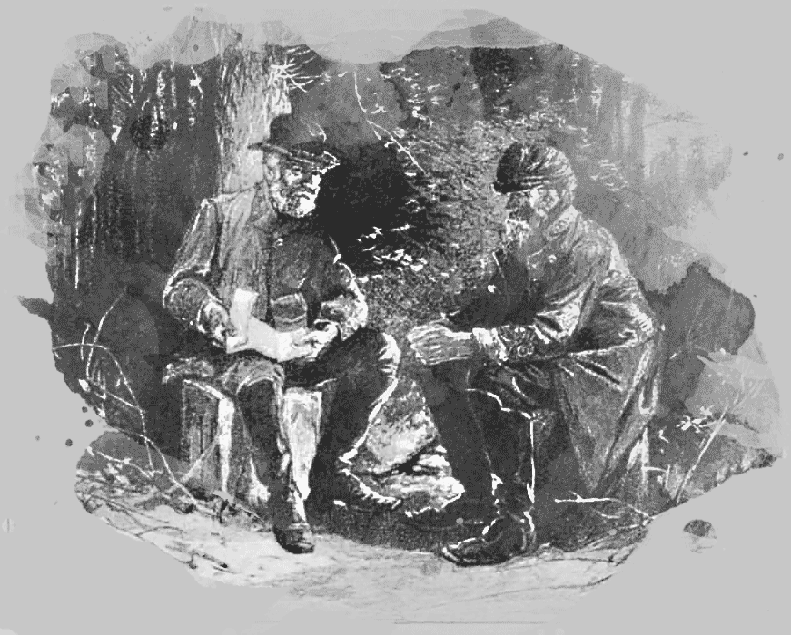
1. květen - 90 000 unionistů ve třech divizích se zastavuje u Chancellorsville v oblasti "Divočiny", špatně prostupném území s hustým porostem a řadou potoků a bažin. Mají proti sobě zhruba poloviční vojsko Konfederace, což Hookerovi dává pocit bezpečí a armáda se v klidu utáboří.
2. květen - Jackson vede riskantní obchvat do týlu nepřítele. 25 000 mužů se celý den nepozorovaně přesouvá po skrytých stezkách pod vedením místních průvodců. Před potomackou armádou teď stojí pouhých 15 000 mužů v čele s Leem. Na jeho pokyn jezdí po Richmondské železnici sem a tam prázdné vlaky aby u seveřanů budily dojem ústupu. Navečer je Jackson za pozicemi Hookerovy armády a ihned útočí. Překvapivý úder obrátí federální jednotky na útěk. Jižané je pronásledují dlouho do noci. Při kontrole pozic svých jednotek je však Jackson za soumraku postřelen vlastními vojáky.
3. květen - Konfederovaní brzy ráno obnovují útok na federální pozice. Unionisté nejsou schopni se zorganizovat k protiútoku a Hooker nařizuje ústup. Problémem je ale Sedgwickových 23 000 unionistů ve Fredericksburgu. Ti přečíslují armádu generála Earlyho a vytlačují rebely od města.
4. květen - U Fredericksburgu se situace obrací. Lee se rozhodl zaútočit na odříznutý sbor generála Sedgwicka s cílem rozdrtit jej ale unionistům se na poslední chvíli podařilo prchnout přes řeku.
5. květen - Hlavní síly Severovirginské armády se odvracejí zpět k Chancellorsville aby znovu udeřily na Hookera. Ten ale mezitím, ke svému štěstí, ustupuje přes rozvodněný Rappahannock. Jižané jsou v ráži ale nepřítel po sobě zanechal pouze prázdné zákopy. Konfederace sice dosáhla vítězství proti dvojnásobné přesile ale cena je vysoká. Ztráty činí asi 13 000 mrtvých a raněných jižanů oproti 17 000 obětem na straně Unie.
10. květen - Na následky zranění umírá "Stonewall" Jackson. Po amputaci ruky se k celkovému špatnému stavu přidala zhoubná infekce. Lee prý tenkrát řekl: "Jemu vzali levou ruku, já však ztratil pravou...". Říká se, že každý je nahraditelný. V případě Jacksona to ale neplatilo. Do konce války už ho nikdo nedokázal plnohodnotně zastoupit.
16. květen - Pemberton, který velí silám rebelů u Vicksburgu musí čelit Grantovým sborům nedaleko Jacksonu. Seveřané předtím obsadili vyklizené město. Federální vojáci jsou v přesile 29 000 proti 22 000 jižanům, přesto je bitva po většinu dne nerozhodná. Nakonec konfederalisti ustupují k Big Black River.
17. květen - Ráno McClernandův a Shermanův sbor útočí na zakopané jižany u Big Black River a rychle je zahánějí na ústup. 1 700 rebelů padá do zajetí.
20. květen - Kruh okolo Vicksburgu se pomalu svírá. Grantova armáda definitivně zahnala Pembertonovy jednotky za opevnění a zakopává se okolo města.
22. květen - Několik útoků Unie proti obraně Vicksburgu nepřinese žádný výrazný úspěch, pouze množství obětí. Vypadá to, že Granta čeká dlouhé obléhání.
27. květen - U Port Hudsonu je situace podobná jako u nedalekého Vicksburgu. Banks neúspěšně útočí proti pevnůstkám a zákopům. I když je unionistů dvakrát víc, ztroskotávají jejich snahy na dobře připravených obranných postaveních rebelů. Banks nakonec dospěje ke stejnému zhodnocení situace jako Grant a jeho oddíly začínají s obléhacími pracemi.
2. červen - V Severovirginské armádě vrcholí přípravy k další invazi na sever. Lee má v úmyslu vymanévrovat Potomackou armádu ze zničené Virginie na území některého z přilehlých států Unie. Kdyby se podařilo zatáhnout Hookerovu armádu do pro Konfederaci výhodné defenzivní bitvy, věří Lee v další vítězství. Jeho armáda má nyní asi 70 000 mužů, 300 děl a hlavně vysokou bojovou morálku. Hooker sice disponuje 120 000 vojáky ale Leeovi veteráni už jsou na boj proti přesile zvyklí.
6. červen - Lee zanechává u Fredericksburgu jeden sbor pod velením A. P. Hilla aby zmařil jakýkoliv pokus unionistů o postup na Richmond. Je si ale jistý že vláda ve Washingtonu bude tlačit na Hookera aby sledoval jižanskou armádu. Potomacká armáda bude teď dělat co on bude chtít...
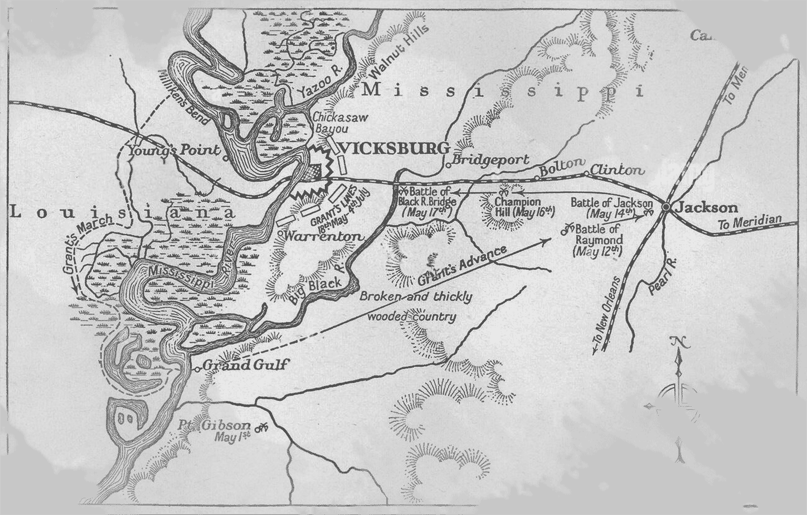
7. červen - Arkansaské pluky generála Taylora útočí na federální posádku v Milliken's Bendu nedaleko Vicksburgu a zahánějí ji na útěk. Unionisty před zkázou zachraňuje obrněná loď Choctaw, která do rebelů pálí ze svých děl.
9. červen - U Brandy Station dochází k největší jezdecké bitvě války. Ráno zaútočí 11 000 jezdců pod velením A. Pleasantona proti shromaždišti Stuartovy kavalerie. Síly jsou zhruba vyrovnány a bitva je nerozhodná. Seveřané ale nakonec ustupují, protože se blíží jižanská pěchota.
14. červen - U Port Hudsonu se Banks znovu pokouší prolomit obranné linie jižanů ale musí se opět s velkými ztrátami stáhnout.
15. červen - Sbor generála Ewella v předvoji Severovirginské armády postupuje údolím Shenandoah a útočí na federální posádku ve Winchesteru. Milroyovy unionisté ve městě jsou beznadějně přečísleni a rozdrceni. Asi 4 500 se jich ocitá v zajetí a v rukou rebelů končí i množství válečné kořisti.
20. červen - Grantovo dělostřelectvo těžce ostřeluje Vicksburg z obléhacích hmoždýřů. Obyvatelstvo se skrývá v podzemních úkrytech a počítá jak dlouho mu ještě vydrží zásoby. Po příchodu dalších posil teď město neprodyšně obkličuje 77 000 yankeeů. Obránců je kolem 30 000.
24. červen - Hlavní část Severovigninské armády v čele s Leem vstupuje do Marylandu, zatímco předvoj Ewellova sboru je již na území Pensylvánie a míří na město Harrisburg.
29. červen - V této vypjaté situaci dochází už poněkolikáté ke změně vrchního velitele Potomacké armády. Hooker rezignuje a na jeho místo je dosazen G. Meade. Nový velitel hodlá urychleně zatrhnout Leemu další postup do nitra Unie a vynutit si bitvu.
30. červen - Na západním bojišti je Braxton Bragg donucen ustoupit ze svých pozic u Tullamomy před Rosencransovou armádou. Má namířeno přes řeku Tennessee do Chattanoogy.
1. červenec - Jedna jižanská divize z Hillova sboru se nečekaně střetává s předsunutými jednotkami Unie v Gettysburgu poté, co zde rebelové měli zajistit zásobu bot. Pouhý střet ale postupně přerůstá v regulérní bitvu, když na obě strany přicházejí početné posily. Do večera se do boje zapojí asi 22 000 jižanů proti 16 500 seveřanům a podaří se jim vytlačit nepřátelské linie z města. Ani Lee ani Meade nepředpokládali střet na tomto místě, avšak obě strany pomalu soustřeďují své síly okolo jednoho bezvýznamného městečka, které brzy vejde do historie.
2. červenec - Přes svůj původní plán donutit nepřítele zaútočit jako prvního a přes nesouhlas některých svých důstojníků se Lee rozhoduje pro ofenzivu veškerých svých sil proti Potomacké armádě. Cítí bojovou převahu svých veteránů a chce udeřit, dokud jsou jednotky seveřanů unavené po dlouhém pochodu na pozice u Gettysburgu. Chybí mu ale 10 000 Stuartových mužů a nikdo přesně neví kde se vlastně kavalerie nachází. Přesto jižané útočí na obě křídla Meadovy armády. Longstreetův sbor nalevo a Ewellův napravo. Oběma se podaří dosáhnout dílčích úspěchů a vytlačit unionisty z některých pozic. Navečer jsou linie Potomacké armády v poněkud zmateném stavu ale stále se drží. V noci doráží na bojiště Stuartovy jízdní brigády. Jeden z průzkumníků, vyslaných minulý večer, našel kavaleristy v Carlislu.
3. červenec - Lee mylně předpokládá, že Meade přesunul některé své jednotky na těžce drcená křídla a oslabí tak svůj střed. Potomacká armáda má ale v záloze dva sbory, které ještě nezasáhly do bojů. Po poledni jižané zahajují dvouhodinou dělostřeleckou přípravu a poté vyrazí pěchotní divize generála Picketta na zteč proti středu seveřanské armády. Tak trochu se opakuje situace od Fredericksburgu ale tentokrát na silně bráněné pozice narážejí rebelové. Na několika místech se podaří prolomit nepřátelské linie ale po urputném boji muže proti muži se projeví unionistická přesila a divize je s obrovskými ztrátami donucena ustoupit. Ze 13 000 vojáků je více než polovina zabita nebo zraněna. Lee teď pochopil že se dopustil zřejmě největší chyby své vojenské kariéry. Zdrceně sleduje návrat poražených Pickettových mužů, smeká klobouk a říká: "Tohle je moje vina..."
4. červenec - Vicksburg, poslední pevnost Konfederace na Mississippi, se vzdává obléhacím vojskům generála Granta.
U Gettysburgu je klid. Ani jedna strana nemá chuť na další boj. Armáda Severní Virginie přišla v minulých dvou dnech o zhruba 22 000 vojáků, Potomacká armáda jich ztratila okolo 23 000.
5. červenec - Lee ustupuje od Gettysburgu. Armáda Unie se ho nesnaží pronásledovat.
Protože Grant nemá prostředky pro transport velkého množství zajatců z Vicksburgu, propouští všech 30 000 obránců proti čestnému slovu, že nebudou bojovat proti Uniii, dokud Konfederace nepropustí odpovídající počet federálních zajatců.
8. červenec - Severovirginská armáda nemůže bezpečně překročit rozvodněný Potomac a zakopává se u Hagerstownu. Meade stále nepodnikl žádné kroky aby se pokusil ji "dodělat". Na západní frontě se vzdává Port Hudson poté, co k vyhladovělým obráncům dorazily zprávy o pádu Vicksburgu. Držet nadále tyto pozice už nemá smysl.
10. červenec - Meadova armáda opatrně sleduje ustupující Leevy jednotky. U Williamsportu dochází ke kontaktu obou armád ale k větší akci nedojde.
13. červenec - V noci Severovirginská armáda překračuje Potomac. V táboře zanechává pouze malou část svých sil a množství hořících ohňů aby zmátl nepřítele.
18. červenec - Před Charlestonem v Jížní Karolíně se federální jednotky snaží obsadit pevnůstku Fort Wagner aby získali pozici, výhodnou pro ostřelování Fort Sumteru. Na baterii útočí 5 000 vojáků, včetně 54. massachusettského černošského pluku ale jsou s velkými ztrátami odraženi tisícovkou obránců.
22. červenec - Potomacká armáda podniká kroky aby zastavila Leeovy jižany v údolí Shenandoah ale jejich postup je pomalý a rebelové jim proklouznou.
26. červenec - Po skoro měsíční honičce s federálními vojáky přes několikero států Unie je dopaden a zajat J. Morgan. Jeho nájezdníci šířili zkázu v Indianě, Ohiu a Západní Virginii.
4. srpen - Leeovi vojáci jsou teď již v relativním bezpečí na svých výchozích pozicích. Obě znepřátelené armády mají opět své síly podél řeky Rappahannock a probíhají sporadické přestřelky mezi jízdními jednotkami.
17. srpen - U Charlestonu pokračují snahy unionistů o ovládnutí části obranných postavení jižanů. Baterie Wagner na ostrově Morris naproti městu a Fort Sumteru však stále tvrdošíjně odolává. Za svými zákopy proto seveřané budují v močálu postavení pro dalekonosné osmipalcové dvěstěliberní dělo Parrot a začínají sedmidenní bombardování Charlestonu a pevnosti Sumter.
25. srpen - Fort Wagner stále odolává opakovaným útokům seveřanského dělostřelectva i pěchoty. Generál Beauregard, který velí obraně Charlestonu si je ale vědom že již dlouho nevydrží a plánuje evakuaci baterie.
29. srpen - Konfederační ponorka C.S.S. Hunley, posila obranného loďstva Charlestonu, se potápí v přístavu a tone v ní několik námořníků.
1. září - Z děl pevnosti Fort Sumter už není funkční ani jedno a z jeho zdí zůstala po soustavném ostřelování hromada cihel. Zkázu ještě dokonává flotila federálních Monitorů.
3. září - Na západním bojišti probíhají operace v Tennessee poblíž stejnojmenné řeky. Bragg couvá se svými jižany před Rosencransovými oddíly směrem k Chattanooze. Unionisté obsazují Jackson a Knoxville.
7. září - V noci obránci Charlestonské baterie Wagner ustupují ze svých pozic. Braxton Brag velí k vyklizení Chattanoogy.
14. září - Bragg, kterému přišel na pomoc Longstreetův sbor ze Severovirginské armády, mrhá jedinečnou šancí, když váhá s útokem na rozdělené Rosencransovo vojsko. Ke svému štěstí si Rosencrans uvědomuje nebezpečnost rozestupu svých sborů a soustřeďuje je. Má proti sobě významnou přesilu 75 000 jižanů proti svým 57 000 vojákům, což je v této válce velmi neobvyklé.
19. září - Obě vojska se k sobě přibližují poblíž potoka Chickamauga a Bragg dává povel k útoku na střed Cumberlandské armády. Ten tvoří především sbor generála Thomase. Bojuje se až do pozdních nočních hodin ale unionisté se stále drží.
20. září - V devět hodin ráno Tennesseeská armáda znovu zaútočí, tentokrát na levé křídlo Rosencransova vojska. Největšímu náporu rebelů opět čelí Thomasův sbor. Kolem jedenácté hodiny se podaří prolomit unionistickou linii a do vzniklé trhliny se začnou valit jedna konfederační divize za druhou. Střed a pravé křídlo Unie jsou pod prudkým útokem a obracejí se na útěk. Zůstává pouze Thomasův sbor aby zbrzdil jižanské pronásledování. Unie utržila pořádný výprask. Jejich celkové ztráty se pohybují okolo 16 000 mužů. Jižané mají ztráty ještě o něco vyšší ale proti rozprášeným seveřanům mají navrch.
21. září - Federální vojáci se po porážce neuspořádaně stahují do Chattanoogy. Účinné pronásledování by mohlo rozdrobenou Cumberlandskou armádu definitivně rozdrtit. Ke své smůle ale Bragg opět zaspal svojí velkou šanci a tak se zranitelné federální jednotky bez větších potíží dostávají do bezpečí.
1. října - Braggova armáda obsazuje okolí Chattanoogy a přerušuje většinu přístupových cest a tím i zásobovací trasy unionistů. Posily pro Cumberlandskou armádu jsou však již na cestě. Jsou to dva sbory z Potomacké armády pod velením generála Hookera a Shermanovy jednotky z Grantovy armády.
8. říjen - Jižané nyní obléhají Chattanoogu a yankeeové přicházejí o poslední dodávky jídla po nájezdu Wheelerovy kavalerie na zásobovací kolony.
12. říjen - Na východě manévruje Lee předstíraným pohybem na Potomackou armádu. Netouží ale po bitvě, nýbrž chce zamezit dalšímu odčerpání Meadeových sil k Chattanooze. Přesto dochází k několika potyčkám, jako například u Bristoe Station.
15. říjen - U Charlestonu se opět potápí ponorka Hunley při pokusu o torpédový útok na blokující plavidlo. Tentokrát v jejím trupu zahyne i její tvůrce a mecenáš H. N. Hunley.
18. říjen - Obklíčená federální posádka v Chattanooze má nového velitele. Rosencrans je pro neschopnost odvolán a je nahrazen generálmajorem G. H. Thomasem.
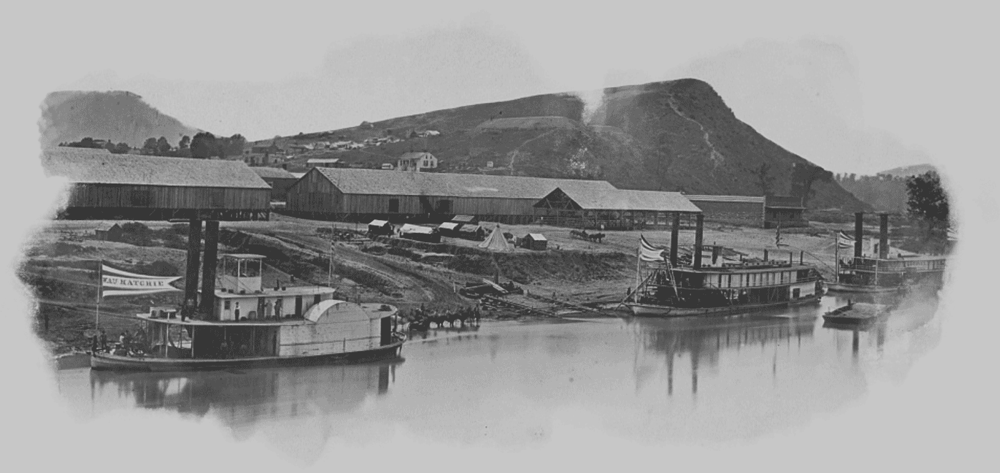
23. říjen - Do Chattanoogy přijíždí generál Grant. Po reorganizaci v armádách Unie teď velí celé Mississippské oblasti.
27. říjen - Brzy ráno překvapuje jednotka unionistů, přeplavující se na prámech po řece Tennessee, jižany u Lookout Mountain. Rebelové jsou rychle přemoženi a většina je jich zajata. Je to první krok k prolomení obležení Chattanoogy.
29. říjen - Longstreetovi jižané na Lookout Mountain po půlnoci útočí na část Hookerových sil, které se již nebezpečně přiblížily k Chattanooze. Na poslední chvíli ale Bragg odvolává jednu divizi, která bude setsakra chybět. Ve zmatené noční řeži se konfederovaným nepodaří nepříteli způsobit větší ztráty. Spíše naopak.
30. říjen - Do Chattanoogy připlouvá federální parník a přiváží obléhaným vojákům zásoby jídla.
4. listopad - Bragg přichází o 20 000 nejlepších vojáků, když jsou Longstreetovy divize odveleny od Chattanoogy ke Knoxvillu.
7. listopad - U Rappahannocku se Meadova armáda pokouší zaútočit na část Leeových opevnění a dosahuje jistého úspěchu. Při akci je zajato 1 629 rebelů.
21. listopad - Grant má již v Chattanooze Shermanových 17 000 mužů a plánuje útok na pozice Konfederace nad městem.
23. listopad - Woodův a Sheridanův sbor útočí na menší jednotku rebelů na Sadovém vršku nad Chattanoogou a donutí ji ustoupit k hlavním silám Konfederace. Bragg se zbrkle zbavuje další divize, když ji posílá na pomoc Longstreetovi ke Knoxville.
24. listopad - U Chattanoogy deštivé a mlhavé počasí nepřeje nějakým výraznějším akcím. Přesto se Hookerovým jednotkám podaří vyhnat jižany z Vyhlídkového pohoří.
25. listopad - Ráno se jižané postupně soustřeďují na Misionářském hřebeni. V jedenáct hodin začíná Sherman mohutný útok na jejich pravé křídlo ale Cleburnova konfederační linie se drží. Vlevo postupuje Hooker ale narazí na říčku Chattanooga se zničeným mostem. Odpoledne posílá Grant dvě divize na střed linie jižanů aby otestovaly jeho sílu. Federální vojáci se přeženou přes první rebelské zákopy a povzbuzeni úspěchem pokračují vzhůru na Misionářský hřeben, přestože je to v rozporu s Grantovými rozkazy. Tennesseeská armáda dostává nečekaný úder a její střed se hroutí. Pravé křídlo pod velením Cleburna a Hardeeho se ale stále drží a kryje nastalý konfederační ústup.
26. listopad - Braggova armáda ustupuje do Georgie. Je stále bojeschopná, nicméně utrpěla taktickou porážku a ztratila asi deset procent sil. Ztráty Unie jsou podobné.
27. listopad - John Morgan prchá z unionistického vězení v Ohiu. Vlakem a pěšky uniká zpět na Jih aby mohl pokračovat v boji.
29. listopad - U Knoxville probíhá útok Longstreetových rebelů proti pevnosti Fort Loudon. Ta tvoří důležitý opěrný bod v linii Burnsideových unionistů. Pozice je ale příliš silně opevněna a útok je s velkými ztrátami odražen.
30. listopad - Meadova Potomacká armáda se opět dala do pohybu. Federalisti se pokoušejí obejít Leeovo pravé křídlo ale po celé konfederační linii narážejí na silně bráněné okopy a opevňovací náspy u Mine Run. Přes veškerou snahu se nedaří jižany obklíčit a Meade se musí stáhnout do výchozích pozic.
5. prosinec - Longstreet vzdává snahy o dobytí Knoxville a velí k přesunu svých vojsk do Blain's Cross Roads. Nemá dostatek obléhacích děl a munice a navíc ho ohrožují síly Unie vyslané Knoxville na pomoc.
11. prosinec - Na Fort Sumter stále dopadají yankeeské granáty a posádka si už na každodenní příděl nepřátelské munice začíná zvykat. Dnes ale dostane zásah muniční sklad a zabíjí 11 obránců.
16. prosinec - Na vlastní žádost je z velení Tennesseeské armády odvolán Davisův oblíbenec Braxton Bragg. Nahrazuje ho J. E. Johnston, který dosud velel oblasti Mississippi.
30. prosinec - Federální vojsko generála Bankse, které se asi před měsícem vylodilo na pobřeží Texasu a postupovalo podél Rio Grande do vnitrozemí tohoto státu se nyní zaměřilo na likvidaci odporu pobřežních opevnění.
2. leden - Vzhledem ke stavu své armády je Lee donucen zabavovat zásoby potravin Virginským zemědělcům aby jeho vojáci přežili nezvykle tvrdou zimu. Potomacká armáda je na tom se zásobováním o něco lépe ale opět trpí hromadnými dezercemi vojáků.
27. leden - Braxton Bragg se stává vojenským poradcem prezidenta Davise.
1. únor - Lincoln podepisuje další nábor branců do armády. Do 10. března má být odvedeno 500 000 mužů na dobu tří let.
5. únor - Sherman se s 20 000 vojáky přesouvá z Vicksburgu přes Jackson do Meridianu. Má v plánu ničit konfederační zásoby a železniční spoje.
13. únor - 7 000 seveřanů pod velením generála Seymoura se vyloďuje u Jacksonville na Floridě. U Ocean Pond se připravuje něco přes 5 000 jižanů na překažení jejich postupu.
17. únor - Ponorce Hunley se podaří potopit první loď. U Charlestonu ničí šalupu U.S.S. Housatonic. Při akci ovšem opět končí na dně i s posádkou. Zdá se že používání podhladinových plavidel k boji ještě dlouho nebude dostatečně efektivní.
20. únor - U Olustee na Floridě se utkávají invazní federální jednotky s rebely pod velením brigádního generála Colquitta. V otevřeném terénu bez větší možnosti krytí, nečekají jižané na útok a vyrážejí proti nepříteli ze svých zákopů. Prudký úder způsobí unionistům těžké ztráty a zažene je na útěk. Konfederovaným zanechávají na bojišti množství vojenského materiálu, včetně 1 600 pušek a 5 děl.
22. únor - 2 500 vojáků Konfederace vedených Forrestem zahání 7 000 kavaleristů Sooy Smithe od jižanského opevnění ve West Pointu.
1. březen - Generál Judson Kilpatrick (US) vede kavalerii o 3 500 mužích na odvážnou výpravu přímo do Richmondu. Chce tam vysvobodit 15 000 federalistů z jižanského zajetí. Jeho plány jsou ale prozrazeny a když dorazí k městu je zahnán soustředěnou palbou obránců a Hamptonovou jízdou.
2. březen - Ulysses Grant je jmenován vrchním velitelem armády Spojených států.
12. březen - Generál Unie Banks zahajuje kampaň na Červené řece v Texasu. Na příkaz generála Hallecka má vést ofenzivu proti proudu tohoto toku za podpory Porterova válečného loďstva a Shermanových jednotek.
14. březen - Flotila Unie vysadila dři divize u Simsportu. Velí jim A. J. Smith. Yankeeové postupují na pevnost Fort De Russy a po nerovném boji se jí zmocňují. Walkerova divize konfederačních obránců pevnosti ustupuje do Alexandrie v Louisianě.
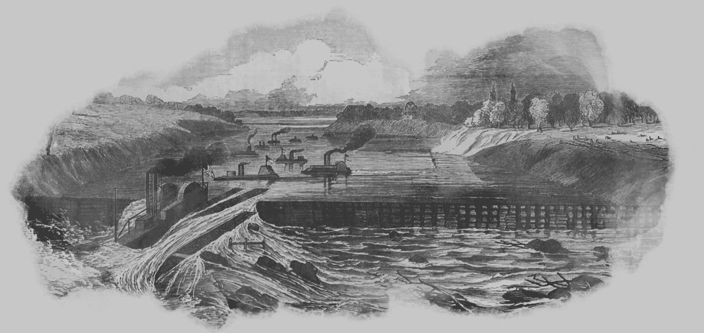
20. březen - Vojska rebelů se pod velením Richarda Taylora soustřeďují u Sabine a Shreveportu. Do nedaleké Alexandrie mezitím přicházejí Banksovy seveřanské jednotky. Banks má asi 26 000 mužů.
26. březen - Forrestova kavalerie operuje v Tennessee a Kentucky. Během nájezdu přepadává města, malé jednotky nepřítele a ničí federální zásoby.
1. duben - Ze severu se k Banksově armádě blíží oddíly F. Steeleho aby ho podpořily v tažení na Červené řece.
5. duben - 16 000 Taylorových rebelů se přesouvá do Mansfieldu. Stojí tak v cestě Banksovi, který míří na Shreveport.
8. duben - Konfederovaní čekají v obranných pozicích u Sabine Cross Roads na příchod předsunutých hlídek Unie. Taylor má sice příkazy držet se v defenzivě ale cítí příležitost. Banksova armáda je početnější ale její kolona je roztažená na míle daleko. Rebelové podniknou hromadný útok a prorazí jednotky seveřanů na čele Banksovy armády. Poražení unionisté se obracejí na útěk a cestou s sebou strhávají další a další vojáky z kolony. Jižanské pronásledování se zastavuje až po několika mílích, kdy se konečně yankeeům podaří uspořádat defenzivní postavení.
9. duben - Jednotky Konfederace dohánějí část Banksových sil u Pleasant Hill a opět útočí a prolamují unionistickou linii. Protiútokem jsou však zahnáni zpět. Po dvou dnech bojů má Konfederace celkové ztráty asi 1 500 mužů. Unie přichází o asi 850 mrtvých a zraněných vojáků a kolem 4 000 zajatých nebo nezvěstných. Banks musí ustoupit a jeho sen o snadném ovládnutí oblasti okolo Červené řeky se pomalu rozplývá.
12. duben - Forrestova kavalerie podniká výpad na pevnost Fort Pillow v Tennessee s federální posádkou, čítající 557 mužů. Více než polovina unionistů je zabita a zbytek je zajat. Mezi rebely je pouze 14 mrtvých. Později je Forrest obviňován, že jeho muži se dopustili masakru na černošské části posádky i když se dotyční vzdali.
20 duben - Síly Konfederace útočí na pevnost Fort Williams u Plymouthu. Úspěšně jim přitom sekunduje nový klounový obrněnec C.S.S. Albermarle. Ten se nejdříve vypořádá se dvěma bránícími loděmi Unie a potom začíná těžkými děly ostřelovat pevnost. Kolem poledne se posádka vzdává. Jižané se zmocňují drahocenných zásob a množství zajatců.
26. duben - Operace unionistů na Red River jsou definitivně minulostí. Banks byl odvolán k jiným úkolům, Porterova flotila s velkými ztrátami ustupuje a Steeleho jednotky se stáhly do Little Rocku.
4. květen - Na východě se po dlouhé době opět začínají dávat věci do pohybu. Od Gettysburgu panoval v oblasti relativní klid ale nyní jsou armády obou stran opět v pohybu. Potomacká armáda má navíc v čele nového velitele. Grant je rozhodnut napadnout Leea a útočit na Severovirginskou armádu až do její definitivní porážky. 122 000 vojáků Unie překračuje řeku Rapidan a míří přímo k pozicím jižanů ve Wilderness. Na západě se Sherman připravuje se svými 98 000 muži na ofenzivu proti Atlantě.
5. květen - Od rána na sebe v Divočině narážejí první uskupení obou armád. Ne náhodou se Lee stáhl do této hustě zarostlé oblasti. Eliminoval tak nebezpečí silného dělostřelectva nepřítele. Obrněnec Albermarle prochází úspěšně soubojem s flotilou Unie na řece Roanoke ale je silně poškozen.
6. květen - Hancockův federální sbor tvrdě doráží na konfederační jednotky A. P. Hilla až ho zachraňuje protiútok Longstreetova sboru. Generál Longstreet je ale při pokusu o obchvat unionistického křídla těžce raněn a v přední linii ho nahrazuje sám Lee. Do večera zůstává na bitevním poli okolo 15 000 mrtvých a raněných.
7. květen - Federální generál Butler se blíží s asi 25 000 muži od jihu na Richmond a Petersburg. Počíná si ale velice zmateně a nerozhodně. Při střetu s mnohem menšími silami Konfederace dokonce ustupuje.
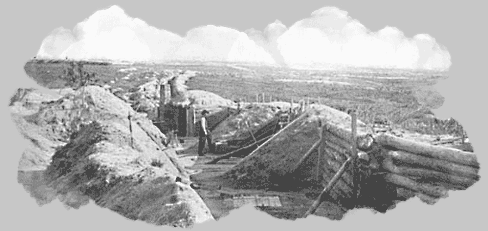
9. květen - Grantovy jednotky se snaží dostat mezi Leea a Richmond ale u Spotsylvanie narážejí na zakopané jižany, kteří je předběhli.
10. květen - Na západě se mezitím Sherman blíží k vojskům J. E. Johnstona, který ustupuje do Resaca. Na pomoc mu vyráží armáda generála Polka.
12. květen - V brzkých ranních hodinách seveřané útočí na zákopy konfederační linie u Spotsylvania Court House a dobývají důležitý bod v jejím středu. Do zajetí upadá velká část bývalé Jacksonovy "First Brigade". Následuje protiútok jižanů a zastavuje další postup Unie. O část obranných linií probíhají krvavé boje celý den a noc. Během vzájemných útoků a protiútoků je usmrceno nebo raněno na 11 800 mužů na obou stranách. Později je toto místo nazýváno Bloody Angle - Krvavý kout.
14. květen - Grant narozdíl od svých předchůdců ve velení Potomacké armády nehodlá po prvních ztrátách ustoupit a plánuje další postup na jih.
15. květen - Jižané pod Breckinridgem poráží jednotky Unie generála Sigela v údolí Shenandoah. U New Marketu obě stejně silné strany ztrácejí okolo 1 000 vojáků.
16. květen - U Drewry's Bluff napadá nerozhodného Butlera konfederační vojsko P. T. Beauregarda a donutí ho k ústupu s velkými ztrátami.
19. květen - U Spotsylvanie pokračuje procentuelně podobné vyčerpávání sil obou armád. Ale vzhledem k tomu že Lee má 50 000 vojáků proti 110 000 Grantovým, je pokračování takovéhoto způsobu boje pro Konfederaci značně nevýhodné.
20. květen - Johnston neustále ustupuje před postupem Shermanových jednotek na Atlantu.
25. květen - Grantův postup je opět zastaven opevněnými liniemi rebelů u řeky North Anna. Také Sherman se zastavuje před obrannými pozicemi konfederalistů u New Hope Church. Hookerův federální sbor se pokouší prolomit pozice jižanů ale proti jejich kartáčové střelbě nemá šanci.
31. květen - Obě velké východní armády obezřetně postupují téměř souběžně směrem na jih. Leeova armáda se zakopává na nové linii u Cold Harboru, přibližně stejně daleko od Richmondu jako při McClellanově ofenzivě v roce 1862. Na západě se Johnston snaží co může aby zadržel postup Shermana na Atlantu. Čelí ale dvojnásobné přesile.
3. červen - U Cold Harboru posílá Grant za rozbřesku proti pozicím jižanů masivní útok. Do poledne, kdy generál Unie zastaví snahy o dobytí obranných pozic nepřítele, se Potomacké armádě prakticky nepodaří postoupit a její ztráty jsou značné. Boji ošlehaní Leeovi muži opět dokázali že odolávat velké přesile jsou zvyklí a frontálním útokem jejich pozice prorazit nelze.
5. červen - U Piedmontu v Shenandoahském údolí je poražena malá jižanská armáda W. E. Jonese federalisty generála Huntera. V boji umírá sám generál Jones.
8. červen - Do údolí Shenandoah přicházejí posily, které vyčlenil Grant z Potomacké armády. V oblasti je nyní okolo 18 000 federálních vojáků. Mimo jiné mají rozkaz ničit zásobovací linie Konfederace a železniční spoje.
9. červen - Kavaleristé Johna Morgana a Bedforda Forresta pokračují ve svém nájezdnickém tažení na odloučené jednotky Unie v Kentucky a Mississippi.
10. červen - Forrestova jízda napadá dvě brigády nepřátelské kavalerie u Brice's Cross Road. Při druhém útoku se k federálním jezdcům přidávají ještě tři pěší brigády ale 3 500 Forresterových mužů rozežene všech 8 000 unionistů, způsobí jim nemalé ztráty a rychle se zase stahuje.
12. červen - Jezdecká bitva se odehraje u Trevilian Station mezi jižany Wade Hamptona a Sheridanovými seveřany.
14. červen - Johnston v noci ustupuje před Shermanem z dalších opevněných pozic u Mariett. Během přesunů je při nepřátelské dělostřelbě zabit generál Polk.
15. červen - Grantovi se podaří oklamat Leea, když vysílá hlavní síly své armády přes řeku James obchvatem k Petersburgu. U tohoto předměstí Richmondu je pouze 5 000 rebelů pod velením generála Beauregarda.
18. červen - Naštěstí pro jižany se sbory Unie nemají k nějaké rozhodnější akci. Podstatná část Severovirginské armády se tak stihne soustředit na nových obranných pozicích u Petersburgu. Předtím se ještě Leeovy jednotky střetnou s federalisty u Bermuda Hundred.
19. červen - Nedaleko od francouzských břehů v LaManchském průlivu potápí válečné plavidlo Unie Kearsage legendární přepadovou konfederační loď Alabamu.
22. červen - Leeova a Grantova vojska se opět ocitají proti sobě v zákopech. Obě armády u Petersburgu vylepšují svoje postavení. Při pokusu o rozšíření bojové linie na jihozápad od města dochází ke střetu Birneyova sboru s jižany A. P. Hilla. Konfederovaní prudkým útokem zahánějí unionisty na útěk a způsobují v jejich řadách těžké ztráty.
24. červen - Sheridanova federální kavalerie a Hunterovy oddíly jsou nuceny ustupovat před jižany u Jone's Bridge a v údolí Shenandoah.
26. červen - Earlyho malá armáda v údolí Shenandoah má nyní relativně volnou cestu k ohrožení Washingtonu. 14 000 jižanů je na tom ale velice špatně se zásobováním, skoro polovina z nich nemá boty a v podstatě nemají co jíst. Přesto je Early rozhodnut pochodovat na sever, dobýt Harper's Ferry a pokračovat na hlavní město Unie.
27. červen - Sherman útočí proti nově bráněným pozicím Johnstonových rebelů na Kenesaw Hill. Jižané znovu tvrdě odrážejí pokusy o zdolání svých obranných valů. 2 000 federálních vojáků je zabito nebo zraněno. Konfederace registruje méně než 500 mrtvých a zraněných.
5. červenec - Earlyho armáda obsazuje Harper's Ferry, překonává řeku Potomac a pochoduje dále na Hargestown. Ve Washingtonu vládne panika a obránci se připravují na boj o město. Na západním bojišti Johnston opět couvá do nových obranných postavení na řece Chattahoochie.
7. červenec - U Charlestonu probíhají boje o ostrov James, důležitý bod v obraně města.
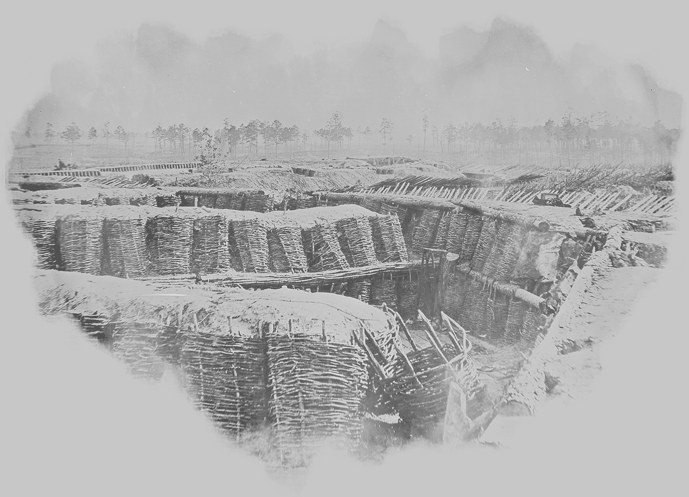
9. červenec - Earlyho jižanům se do cesty postaví narychlo seskupené jednotky většinou čerstvě naverbovaných federálních vojáků. Jeho veteráni jsou sice unaveni dlouhým pochodem ale rozehnat vojsko zelenáčů jim nedělá nějaké zvláštní potíže.
11. červenec - Asi 8 000 mužů generála Earlyho doráží před opevnění Washingtonu. Město brání 20 000 nezkušených mužů ale blíží se dva sbory, odvolané od obléhání Petersburgu. Early se dozvídá o příchodu posil Unie a ruší útok. Hlavní účel tažení, odlehčení Severovirginské armádě, je splněn.
12. červenec - Jižané ustupují od Washingtonu a cestou ještě vystřelí pár vzpurných salv na pevnost Fort Stevens, kde se v tu chvíli nachází prezident Lincoln.
14. červenec - U Tupela v Mississippi bojuje Forrest s trestnou výpravou, vyslanou na jeho zničení. Federalisté pod A. J. Smithem odolají útokům Forrestových mužů a donutí je ustoupit, nicméně rebelové jsou stále bojeschopní a zanedlouho budou pokračovat ve svém nájezdnickém řádění.
16. červenec - Early se svým vojskem uniká zpět do údolí Shenandoah.
17. červenec - Obě znepřátelené armády v Georgii se přiblížily k Atlantě. Johnston po celkem vydařeném ústupu před dvojnásobně silnějším Shermanem plánuje obranu města. Je však odvolán prezidentem Davisem a nahrazen J. B. Hoodem. Důvodem je prezidentův dojem, že Johnston je příliš pasivní.
20. červenec - Nový velitel Tennesseeské armády s úderem proti yankeeům dlouho neváhá. Vysílá 20 000 mužů aby napadli Thomasovu Cumberlandskou armádu, část Shermanových sil u Atlanty. Od začátku jsou ale s organizací útoku problémy a boj končí neúspěchem a velkými ztrátami pro jižany.
22. červenec - Další výpad proti McPhersonově vojsku na západ od Atlanty také nepřinese žádný větší úspěch. Rebelové sice ukořistí 13 děl a zabijí samotného McPhersona ale za cenu vysokého počtu obětí. Během posledních bojů také Konfederace přišla o množství důstojníků.
24. červenec - Vojáci Jubala Earlyho vybojují u Kernstownu vítězství nad svými pronásledovateli, unionisty G. Crooka.
30. červenec - U obleženého Petesburgu se schyluje k pokusu unionistů o prolomení obrany. Do tunelu směřující k pozicím jižanů, který kopali ženisté celý měsíc, je umístěna silná nálož a 20 000 mužů je připraveno podniknout úder. Po výbuchu, který na místě zabije kolem 300 rebelů, se začnou do vzniklého kráteru hrnout jedna seveřanská divize za druhou. Přední řady ale nemohou postupovat a navíc se kolem kráteru rychle soustřeďují konfederační obránci. V nastalém zmatku je zabito kolem 4 000 unionistů a zbytek je zahnán hustou palbou na útěk.
5. srpen - Federální flotila admirála Farraguta na Alabamském pobřeží zahajuje útokem na pevnosti v zálivu Mobile ofenzivu proti jednomu z nejdůležitějších přístavů Konfederace. Vstup do kanálu je silně bráněn množstvím pevností, dělostřeleckých baterií a minových polí. Nebezpečí pro seveřany představuje hlavně těžké dělostřelectvo pevnosti Fort Morgan. Lodím Unie se nakonec po těžkém souboji s obranou kanálu podaří dostat se přes miny i klounový obrněnec Tennessee a za pozicemi jižanů a provedou výsadek pěchoty.
9. srpen - Většina pozic jižanů v Mobilském zálivu kapituluje. Vyjímkou je pouze obklíčená pevnost Fort Morgan. Přístup k přístavu Mobile je definitivně ztracen.
14. srpen - V údolí Shenandoah má nově utvořená armáda Unie s generálem Sheridanem v čele za úkol dostihnout a zničit Earlyho vojsko. Jižané se ale opevňují na Fisher's Hill a Sheridan po zhodnocení síly nepřítele ustupuje. Sherman začal s obkličováním Atlanty. Federální dělostřelectvo ostřeluje město.
15. srpen - U východního pobřeží operuje přepadová loď Konfederace Tallahassee. Během svého řádění tento rychlý parník zajme nebo zničí 39 lodí nepřítele.
20. srpen - Jak u Petersburgu, tak u Atlanty se unionisté snaží najít skulinu v obranných postaveních rebelů. Seveřanská kavalerie u obou měst napadá zásobovací trasy a železnici.
21. srpen - V údolí Shenandoah Early pronásleduje Sheridanovu armádu a doráží na jeho zadní voje.
23 . srpen - Pevnost Fort Morgan u Mobile kapituluje po soustředěném federálním útoku.
25. srpen - Devět brigád Konfederace pod velením A. P. Hilla podniká protiútok na znovuzískání železnice z Petersburgu do Weldonu. Opět se projeví morální převaha konfederačních veteránů a unionisté jsou zahnáni na útěk.
31. srpen - Howardova část Shermanových armád u Atlanty kontroluje poslední železniční spoj s okolním světem. Hardeeho jižanský sbor se sice pokusí dobýt železnici zpět ale vyláme si zuby na seveřanských zákopech. Konfederovaní musí s velkými ztrátami ustoupit a Atlanta se ocitá v obležení.
1. září - Situace v Atlantě se pro jižany stává neudržitelnou. Poslední odpor Hardeeho armády u Jonesbora je zlomen a Hood nařizuje vyklizení města.
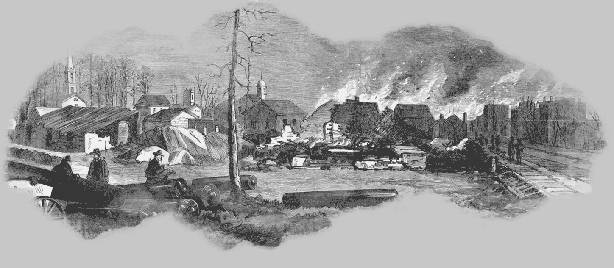
2. září - Do Atlanty vstupují první federální jednotky.
4. září - Velitel jižanské kavalerie John H. Morgan je zabit při přepadu svého ležení u Greenville v Tennessee.
16. září - Dlouhé obléhání vyčerpává zásobování Severovirginské armády v Petersburgu. Určitou možností na získání potravin jsou nebezpečné výpady jízdy do týla nepřítele. Leeovy vojáky přichází posílit sbor R. H. Andersona z Earlyho armády v údolí Shenandoah.
19. září - Na cestě ke své základně na Bunker Hillu je Sheridanovým vojskem napadeno 12 000 jižanů generála Earlyho. Čtyři divize rebelů jsou příliš roztaženy, takže hlavní nápor nedaleko Winchesteru dlouho nese pouze jedna z nich. Když jsou jednotky Konfederace pohromadě, podniknou protiútok ale mají proti sobě přesilu 40 000 unionistů. Kolem poledne musí konfederovaní ustoupit k Newtownu.
22. září - Po pronásledování dostihnou Sheridanovy federální síly Earlyho muže u Cedar Creek a dochází k další nerovné bitvě. Po hromadném útoku na celé linii je obrana jižanů prolomena a donucena k rychlému ústupu. Vojáci Unie získávají množství zajatců a také dvanáct děl.
23. září - Earlyho poražení jižané jsou vytlačeni k New Marketu a nemohou zabránit plenění federalistů v údolí Shenandoah. Sheridanovi vojáci na Grantův rozkaz ničí sýpky a pálí úrodu.
26. září - Bedford Forrest opět řádí v Tennessee a Sterling Price vede 12 000 jižanů proti několika cílům v Missouri.
30. září - Na Petersburgsko-Richmondské frontě dochází k útokům Potomacké armády na některé pozice v jižanském opevnění. Převážně je ofenziva odražena ale seveřanům se podaří dobýt pevnost Fort Harrison. Leeovo vojsko má s obranou stále se rozšiřující linie velké problémy. Na jihovýchodě opevnění je vojáky A. P. Hilla odražen útok dvou federálních sborů a při protiútoku je nepřítel zahnán na ústup ze svých dosavadních pozic.
5. říjen - Hood se po poradě s prezidentem Davisem rozhoduje udeřit na Shermana. Se svou opět zkoncentrovanou armádou postupuje do týla unionistů aby je odřízla od severní zásobovací cesty z Chattanoogy. Během likvidace železniční tratě u Allatoony jižané napadnou federální divizi generála Corseho ale jsou odraženi.
15. říjen - Priceovy západní konfederační jednotky stále pokračují ve svých operacích v Missouri. Poráží federální posádky v Sedalii, Glasgow a Ridgely.
19. říjen - 10 000 mužů Jubala Earlyho brzy ráno útočí u Cedar Creek na Sheridanových 30 000 unionistů. Překvapené federální jednotky jsou brzy přemoženy až na Wrightův sbor, který spořádaně ustupuje. Jižané zajmou na 1 500 nepřátel a zabaví množství zbraní a zásob. Odpoledne ale odpovídají unionisté soustředěným protiútokem, zlomí odpor rebelů a zaženou je na zmatený ústup.
20. říjen - Poražená Earlyho armáda se soustřeďuje u Fishe's Hillu a ustupuje k New Marketu.
21. říjen - U Lexingtonu v Missouri poráží jižané federální jednotky generála J. G. Blunta.
23. říjen - Svým neobratným manévrováním se Priceovy jednotky dostanou do pasti. Za zády mají Pleasantovu armádu a před sebou znovu se koncentrující Bluntovy jednotky. 8 000 vojáků konfederačního předního voje napadne síly Unie u říčky Brush ale jsou odraženi a následně musejí čelit protiútoku. Mezitím dopadá seveřanský útok na zadní část Priceových jednotek, vedený Pleasantem. V krvavé bitvě jsou jižané tvrdě poraženi.
25. říjen - Zbytky Priceovy armády jsou na ústupu dostiženy federální kavalerií u Mine Creeku. Konfederace přichází o dvě divize a velkou část dělostřelectva.
26. říjen - Hoodova armáda stále operuje v zázemí Shermanových jednotek a napadá jeho příliš dlouhé zásobovací trasy. Konfederovaní mají v plánu invazi do Tennessee. Zbývající vojáci Priceova vojska unikají pronásledování a ustupují na jih. Skončila tak poslední větší aktivita Konfederačních jednotek na tomto území.
27. říjen - U Petersburgu odolává Hethova a Mahoneova jižanská divize dalšímu pokusu unionistů o přerušení železničního spojení. Útok je odražen a koleje zůstávají pod kontrolou rebelů.
30. říjen - Konfederační jednotky generála Hooda postupují podél řeky Tennessee dále na sever. Bohužel se tímto manévrem nepodařilo odradit Shermana od postupu na jih. Ten pouze vysílá část svých sil na Hoodovo zastavení. Nové armádě velí generál Thomas, ke kterému se v Nashville připojují i jednotky bojující nedávno proti Priceovy.
8. listopad - Lincoln je znovu zvolen prezidentem Unie. Pro Jih to znamená, že válka bude pokačovat.
10. listopad - Zatímco Thomasově armádě v Nashvillu stále přicházejí posily, Hood takové možnosti nemá. Prakticky ho může podpořit pouze Forrest, který se po operacích v Tennessee stáhl do Corinthu v Mississippi.
11. listopad - Sherman zahajuje svůj nechvalně známý pochod přes Georgii k Atlantickému oceánu. Generál Unie nashromáždil kolem 60 000 vojáků a je rozhodnut přesunout je až do přístavu Savannah využívajíce k zásobování místních zdrojů. V cestě jim prakticky stojí pouze něco kolem 20 000 vojáků Konfederace včetně Wheelerovy kavalerie. Před odchodem z Atlanty federalisté ničí většinu domů ve městě a vůbec všechno co by mohli jižané nějak využít.
13. listopad - Earlyho jednotky ukončují operace v údolí Shenandoah a přesouvají se na pomoc Leeově armádě u Petersburgu.
19. listopad - Ve Florenci se Forrest připojuje k Hoodově armádě a jižanské jednotky vyrážejí na Nashville. Postup je bržděn napadlým sněhem a bahnitými cestami.
28. listopad - Hood se chce postavit části Thomasovy armády u Duck River. Má proti těmto seveřanům pod velením generála Shoefielda početní převahu ale manévrování v rozbředlém terénu je nesnadné a federalisté unikají přes řeku.
29. listopad - Další zmařená šance na rozdrcení Shoefieldových jednotek. Při útoku na jejich kolony ve Spring Hillu se projeví neschopnost velení konfederantů a tak znovu unikají po cestě na Franklin.
30. listopad - Shoefield se ve Franklinu opevňuje a jižané po zformování prvních jednotek útočí proti jeho pozicím. Po velkém masakru, kdy rebelové útočí proti nepřátelským bateriím a silným postavením pěchoty se federalisty podaří vytlačit. Hoodovi nic nevychází tak jak by chtěl, jeho muži jsou vyčerpaní a teď ještě utrpěli těžké ztráty proti slabšímu nepříteli. Shoefieldova armáda ustupuje do Nashvillu a přidává se k Thomasovým vojákům.
5. prosinec - Hlavní část Hoodovy armády se pohybuje u Nashville a zbytek pod velením Bedforda Forresta postupuje na Mufreesboro.
10. prosinec - Shermanův předvoj doráží k Savannah. Celou cestu plenilo federální vojsko pás území okolo svého postupu. Tisíce lidí opouští své domovy stojící v cestě krutému nepříteli.
13. prosinec - Shermanovy jednotky dobývají pevnost McAllister na řece Ogeechee u Savannah a navazují kontakt s federálním loďstvem.
15. prosinec - Thomas po dlouhém váhání zahajuje úder proti Hoodovým silám okolo Nashville. Na několika místech se jim podaří jižany zatlačit ale do setmění ještě není rozhodnuto. Mrazivá noc v zákopech za deště a sněžení znamená pro vojáky na obou stranách hotové peklo.
16. prosinec - Hood přes jasně nevýhodnou situaci svých sotva 30 000 mužů nehodlá ustoupit. Thomas ráno obnovuje útok celou svou 50 000 armádou. Rebelové odolávají zdrcující přesile poměrně dlouho ale odpoledne jejich linie povolí. Množství konfederovaných je zajato a zbytek prchá z bojiště.
17. prosinec - Poražené zbytky Hoodovy armády ustupují za nelidských podmínek zasněženou krajinou směrem na Columbii. Většina z nich nemá boty a cesta jejich pohybu se dá vystopovat podle množství krvavých šlápot.
20. prosinec - 10 000 vojáků Konfederace uniká s plnou výzbrojí z opevnění Savannah a zanechává město napospas Shermanově armádě.
24. prosinec - Velká federální flotila pod velením generála Butlera útočí na pevnost Fort Fisher v ústí Wilmingtonského přístavu. Šedesát těžce vyzbrojených lodí proti ani ne padesáti dělům obránců. Dělostřelba Unionistů je ale nepřesná a v pevnosti nenadělá větší škody. Sporadická střelba jižanů nevypovídá o jejich neschopnosti ale o nedostatku střeliva.
25. prosinec - Lodě Unie vysazují 6 000 vojáků pěchoty na pevninu nedaleko pevnosti Fort Fisher. Jsou ale zastaveni kartáčovou střelbou rebelů a vrací se zpět na paluby přepravních lodí. Flotila ustupuje a útok na poslední funkční přístav Konfederace je odložen.
1. leden - Plán unionistického generála Butlera na prokopání kanálu v ohybu řeky James skončí fiaskem. Poté co černí dělníci po několika měsících tvrdé práce téměř propojili dvě ramena řeky, měl být zbytek břehu odstraněn náloží střelného prachu. Po odpálení ale výbuch zasypal zeminou již vykopanou část.
11. leden - V Beverly v Západní Virginii 300 mužů jižanské kavalerie poráží federální jednotku a bere do zajetí 600 unionistů.
13. ledna - Další pokus o dobytí pevnosti Fort Fisher probíhá pro Unii mnohem příznivěji. Opět jsou vysazeny početné jednotky na sever od pevnosti a opět probíhá dělostřelecká přestřelka mezi oběma stranami. Fort Fisher brání nyní s posilami asi 1 500 Jižanů. V nedalekém Wilmingtonu je se svými jednotkami přítomen Braxton Bragg ale nevypadá to, že by měl v úmyslu přijít pevnosti na pomoc.
14. leden - Po dlouhém, únavném pochodu nyní odpočívá Hoodova Tennesseeská armáda v Tupelu v Mississippi. Hood žádá prezidenta Davise aby byl odvolán z velení své armády.
15. leden - Ze dvou stran probíhá útok seveřanů na poloostrovní pevnost Fort Fisher. Ze západu 8 000 mužů generála Terryho a z druhé strany asi 1 800 námořníků. Na východě jsou unionisté odraženi ale Terryho jednotky svádějí tvrdý boj muže proti muži. Po několikahodinové bitvě se nakonec federálním vojákům za pomoci střelby z lodí podaří prorazit houževnatou obranu a jižané se vzdávají. Brána do posledního přístupného přístavu Konfederace je tímto uzavřena.
16. leden - Při oslavách úspěchu federalistů v pevnosti Fort Fisher dochází k mohutné explozi v muničním skladu. Svítit si na střelný prach svíčkou se prostě nevyplácí :-).
19. leden - Robert Lee nepříliš nadšeně přijímá funkci vrchního velitele sil Konfederace.
21. leden - Odpočatá Shermanova armáda se zvedá ze Savannah a pochoduje do Jižní Karolíny.
23. leden - Na řece James probíhají bitky mezi oběma znepřátelenými flotilami.
24. leden - Velení Tennesseeské armády přebírá Richard Taylor s rozkazem vyrazit na obranu Jižní Karolíny před Shermanovými kolonami.
5. únor - Patová situace u Petersburgu pokračuje. Leeovi vojáci čím dál víc trpí nedostatkem zásob a nemocemi, což je příčinou vzmáhající se dezerce. Unionisté navíc obsazují nové pozice a protahují Petersburgskou frontu na skoro 60 kilometrů.
8. únor - Sherman dál neohroženě operuje v Jižní Karolíně a slabé síly rebelů v oblasti mu v tom jen těžko dokážou zabránit. Za jeho armádou se táhnou zástupy černoškých rodin, kterým generál Unie slíbil půdu na dobytých územích.
16. únor - Beauregardovy jednotky na poslední chvíli opouštějí Columbii. První Shermanovi vojáci vstupují do města.
17. únor - Během noci vypuká v Columbii peklo. Yankeeové rabují a podpalují domy. Do rána zůstane z města hromada popela a ohořelých trosek. Sherman později popřel, že by k zapálení města dal rozkaz, nicméně ani nedokázal zabránit řádění svých zdivočelých a opilých vojáků.
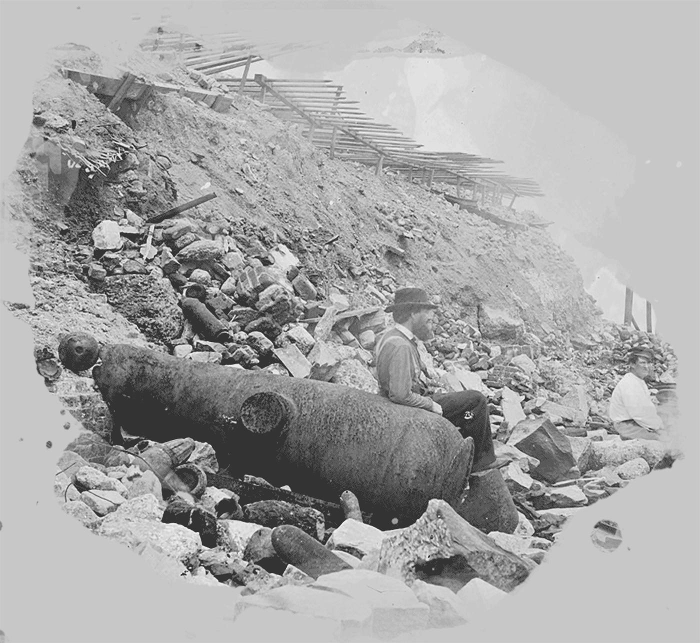
18. únor - Po dlouhých měsících každodenního těžkého ostřelování se vzdává přístav Charleston i Fort Sumter. Noc předtím opustily město i pevnost všechny konfederační jednotky.
19. únor - Přesně podle pravidel totální války ničí nelítostný Sherman továrny, sklady, železniční depa a zkrátka všechno co by mohlo být nepříteli k užitku.
21. únor - Wilmington - další město, které opouštějí jižanští vojáci. Vědí že nemohou vzdorovat přesile jednotek generála Coxe, které se rychle blíží.
25. únor - Po Taylorovi přebírá velení J. Johnston. Jeho Tennesseeská armáda má nyní kolem 25 000 vojáků a členů milicí.
2. březen - Zbytky Earlyho vojska v údolí Shenandoah se opevňují ve Waynesboro před federální jízdní výpravou o asi 10 000 mužích. Jižanů je okolo 2 000 a mají posledních 11 děl. Díky přesile a obchvatu kavalerie pod velením nechvalně známého Custera jsou jižané brzy přemoženi a velká část je jich zajata. Generál Early a zbytek mužstva uniká. Byli to poslední vojáci Konfederace v údolí.
6. březen - Sherman překračuje řeku Pee Dee v Severní Karolíně a pokračuje na Fayetteville.
8. březen - Konfederace schvaluje přijímání černochů do armády. Každý černý otrok, který se přihlásí k vojenské službě má dostat svobodu.
9. březen - Armáda B. Bragga úspěšně napadá Coxovy unionistické jednotky v Kinstonu u New Bernu. Jižanská kavalerie zahání u Monroe's Cross Road na útěk průzkumné jednotky Unie.
11. březen - Braggovy jednotky se opět stahují od Kinstonu. První významější protiútok rebelů v tomto roce přinesl pouze nepříliš významný ústup nepřítele.
13. březen - Shermanovi vojáci vstupují do Fayetteville a ničí místní zbrojovky a ostatní průmyslová zařízení. Na okrajích obou hlavních seveřanských front dochází k prvním kontaktům předsunutých jednotek.
16. březen - Shermanovy jednotky jsou opět na postupu a tlačí před sebou zbývající jižany v oblasti. Rebelové generála Hardeeho se shromažďují v opevnění nedaleko Averasboro ale jsou napadeni Slocumovým sborem a zahnáni na ústup.
17. březen - Proti Mobile v Alabamě se připravují federální síly o celkovém počtu zhruba 45 000 vojáků. Město brání necelých 10 000 konfederovaných.
19. březen - Johnstonovi, který teď velí konfederačním silám v oblasti obou Karolín, Georgie a Floridy, se podařilo shromáždit v Bentonville okolo 17 000 mužů včetně Hardeeho ustoupivších jednotek. Chystá se napadnout Shermanovo levé křídlo.
19. březen - U Bentonvillu dochází k bitvě mezi Johnstonem a Shermanovými unionisty. Po těžkých bojích v rozbláceném terénu s dílčími úspěchy na obou stranách, jižané ustupují zpět do výchozích pozic.
20. březen - Unionistům, stojícím proti Johnstonově armádě, přicházejí posily ze zbytku Shermanových sil. Johnston musí čelit sérii útoků po celé své frontě a nakonec ustupuje.
23. březen - Shermanova armáda se po spojení s vojskem generála Shoefielda rozrůstá na celých 90 000 vojáků. Grant nyní disponuje zhruba 120 000 muži. Jižanské armády slábnou a jsou pomalu ale jistě zatlačovány do obklíčení. Robert Lee si je vědom, že se svou stále se tenčící armádou musí zkusit prorazit, jinak už nemá šanci. Má posledních 50 000 oddaných mužů, z toho jsou schopné boje asi dvě třetiny.
25. březen - Generál J. B. Gordon vede jeden z posledních pokusů o prolomení federální linie u Petersburgu. Jižané se probijí až k pevnosti Fort Stedman a zmocní se federální baterie. Odpoledne ale unionisté podniknou protiútok a Gordonovi vojáci nedokážou dobyté pozice udržet. Rebelové ustupují a Lee počítá další mrtvé a raněné. Je jich skoro 4 000.
27. březen - Unionisté dokončují obklíčení přístavního města Mobile.
30. březen - U Petersburgu probíhají operace obou armád. Na levém křídle jižanů čelí útoku Pickettova divize. Sheridanova federální kavalerie je odražena ale nikoliv nadlouho. Unii přicházejí mocné posily a v noci musí konfederační vojáci ustoupit.
1. duben - Další rána dopadá na Severovirginskou armádu. Téměř polovina Pickettových vojáků padá do zajetí a zbytek je zahnán na útěk po protiútoku federální jízdy generála Sheridana.
2. duben - 125 000 mužů Potomacké armády zahajuje ofenzivu na celé petersburgské frontě. Slabá linie jižanů je prolomena na několika místech. Nejdéle se drží pevnosti Fort Gregg a Fort Baldwin, které kryjí ustupující konfederační armádu. Odpoledne je již Petersburg v rukou unionistů. Ve městě hoří mnoho budov a námořníci na řece James ničí lodě, se kterými nestačili uprchnout. Město Selma v Alabamě je dobyto Wilsonovou federální jízdou. Mnoho konfederovaných je zajato a zbytek prchá.
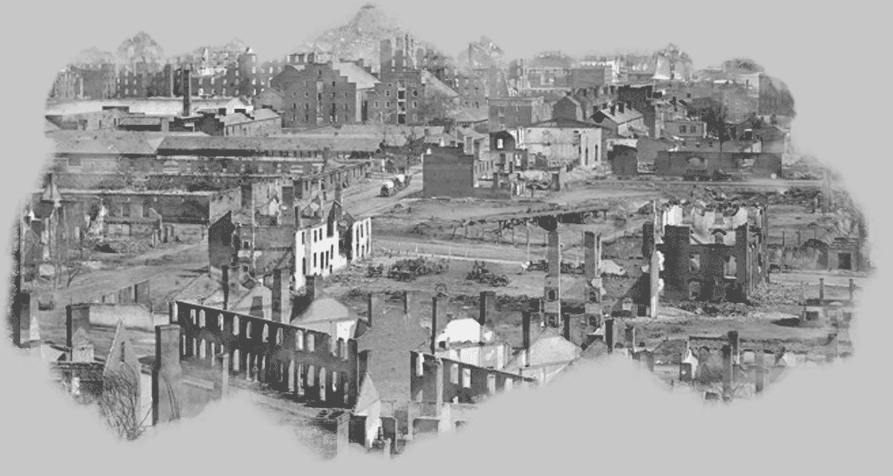
3. duben - Grantovy jednotky vítězně vstupují do Richmondu. Prezident a vláda Konfederace jsou evakuováni a na kapitolu vlaje federální vlajka.
6. duben - Leeova armáda se seskupuje u Amelia Court House a dále ustupuje v naději že se spojí s Johnstonem. Od hlavní kolony se odděluje Ewellovo vojsko aby krylo zbytek armády ale u Sayler's Creeku je obklíčeno a poraženo.
9. duben - U řeky Appomattox jezdec na koni projíždí kolem linií Unie s bílým praporem. Severovirginská armáda se po neprodyšném odříznutí vzdává. Kolem 30 000 zbývajících jižanů je v zuboženém stavu a valná část jich ani nemá zbraň. V Appomattox Court House se schází Lee s Grantem a dohadují podmínky kapitulace.
12. duben - Federální jednotky po urputných bojích o okolní pevnosti obsazují Mobile. Obranná posádka posledního významějšího jižanského města prchá aby se spojila s Johnstonem.
14. duben - Ve Fordově divadle ve Washingtonu je při večerním představení spáchán atentát na prezidenta Lincolna. Kulka je vypálena Johnem Wilkesem Boothem. Zhruba ve stejný čas dochází i k nezdařenému útoku na ministra zahraničí Sewarda.
17. duben - V Columbusu už celkem zbytečně ničí seveřanská kavalerie generála Wilsona továrny, mosty, železniční depa a loděnice.
26. duben - Johnston se Shermanem podepisují kapitulační smlouvu. S ukončením bojové činnosti druhé největší armády je Konfederace prakticky bezbranná. Aktivní zůstaly pouze jednotky Kirbyho Smithe na Mississippi a vojsko Richarda Taylora v Alabamě.
2. květen - Nový prezident Unie Andrew Johnson vypisuje odměnu 100 000 dolarů za polapení Jeffersona Davise. Mnozí seveřané považují vůdce Konfederace zodpovědného za Lincolnovu smrt.
4. květen - Po okružní jízdě ostatků prezidenta po státech Unie je teprve nyní Lincoln pohřben. V Alabamě kapituluje další velká rebelská armáda generála Taylora. Stejně jako v předchozích případech jsou muži po složení zbraní propuštěni do svých domovů, přičemž si mohou ponechat všechen svůj osobní majetek včetně koní.
10. květen - Prezident Davis je s ještě několika členy kabinetu dopaden v Georgii jednotkou federální jízdy.
Červen - V Mississippi kapituluje armáda Kirbiho Smithe a postupně se vzdávají i další menší jednotky včetně posádek nezávislých plavidel. Blokáda většiny jižního pobřeží je zrušena.
Červenec - Doznívají poslední známky jižanského odporu. Pomalu začíná období známé jako "Rekonstrukce Jihu".